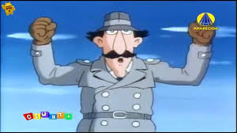
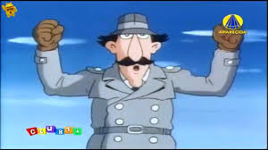

Geralmente, Significado de encher linguiça expressão
é
utilizada quando
alguém fica
estendendo
um
assunto
com
detalhes
ou
questões
sem
a
menor
importância.
O “enchedor de
linguiça”
também
pode
ser reconhecido naqueles típicos sujeitos que arranjam
qualquer assunto desinteressante para impressionar alguém ou matar o tempo.
Em diferentes léxicos, depois da descrição botânica e culinária, está lá registrada alguma variante de seu significado corrente: bobagem, besteira, disparate; desprovido de conteúdo, sem importância

.jpg) 

![tênis]()


Pensador
Pensador Textos grandes
Textos grandes
A amizade consegue ser tão complexa.
É a alimentação dos fracos ,
É o reino dos fortes.,
,
Faz-nos cometer erros,
Os fracos deixam se ir abai,
xo
Os fortes erguem sempre a c,
abeça
Os assim assumem-nos.,
,
Sem pensar conquistamos,
o mundo geral,
e construímos o nosso peque,
no lugar,
deixando brilhar cada estre,
linha.
,
Estrelinhas.,
Doces, sensíveis, frias, te,
rnurentas.
Mas sempre presentes em qua,
lquer parte.
Os donos da amizade.Desconh,
ecido
1.5 mil compartilhamentosCU,
RRICULUM VITAE
,
Eu já dei risada até a barriga doer,
Já nadei até perder o fôlego,
Já chorei até dormir
E acordei com o rosto desfigurado.
Já fiz cosquinha na minha irmã só pra ela parar de chorar,
Já me queimei brincando com vela.
Eu já fiz bola de chiclete e melequei todo o rosto.
Já conversei com o espelho.
E até já brinquei de ser bruxo.
Já quis ser astronauta,
Violonista, mágico, caçador e trapezista.
Já me escondi atrás da cortina e esqueci os pés pra fora,
Já passei trote por telefone,
Já tomei banho de chuva,
E acabei me viciando.
Já roubei beijo,
Já fiz confissões antes de dormir
Num quarto escuro pro melhor amigo.
Já confundi sentimentos,
Peguei atalho errado
E continuo andando pelo desconhecido.
Já raspei o fundo da panela de arroz carreteiro,
Já me cortei fazendo a barba apressado,
Já chorei ouvindo música no ônibus.
Já tentei esquecer algumas pessoas,
Mas descobri que essas são as mais difíceis de se
[esquecer.
Já subi escondido no telhado pra tentar pegar estrelas,
Já subi em árvore pra roubar fruta,
Já caí da escada de bunda.
Conheci a morte de perto,
E agora anseio por viver cada dia.
Já fiz juras eternas,
Já escrevi no muro da escola,
Já chorei sentado no chão do banheiro,
Já fugi de casa pra sempre,
E voltei no outro instante.
Já saí pra caminhar sem rumo,
Sem nada na cabeça, ouvindo estrelas.
Já corri pra não deixar alguém chorando,
Já fiquei sozinho no meio de mil pessoas
Sentindo falta de uma só.
Já vi pôr-do-sol cor-de-rosa e alaranjado,
Já me joguei na piscina sem vontade de voltar,
Já bebi uísque até sentir dormentes os meus lábios,
Já olhei a cidade de cima
E mesmo assim não encontrei meu lugar.
Já senti medo do escuro,
Já tremi de nervoso,
Já quase morri de amor,
Mas renasci novamente pro ver o sorriso de alguém
[especial.
Já acordei no meio da noite
E fiquei com medo de levantar.
Já apostei em correr descalço na rua,
Já gritei de felicidade,
Já roubei rosas num enorme jardim.
Já me apaixonei e achei que era para sempre,
Mas sempre era um "para sempre" pela metade.
Já deitei na grama de madrugada
E vi a Lua virar Sol,
Já chorei por ver amigos partindo,
Mas descobri que logo chegam novos,
e a vida é mesmo um ir e vir sem razão.
Foram tantas coisas feitas,
Momentos fotografados pelas lentes da emoção.
Guardados num baú, chamado coração.
E agora um formulário me interroga,
Encosta-me na parede e grita:
"- Qual sua experiência?”.
Essa pergunta ecoa no meu cérebro:
"experiência... experiência...”
Será que ser "plantador de sorrisos" é uma boa
experiência?
Não!
”Talvez eles não saibam ainda colher sonhos!”Félix C
oronel
Como é que é?. 2003
...Mais
160 compartilhamentosHá um grande desejo em mim de s
empre melhorar.
Melhorar. É o que me faz feliz.
E sempre que sinto que estou aprendendo menos, que a
curva de aprendizado está nivelando, ou seja o que for, então não fico muito contente.
E isso se aplica não só profissionalmente, como pilo
to, mas como pessoa.Ayrton Senna
51 compartilhamentosA Lista
Faça uma lista de grandes amigos,
quem você mais via há dez anos atrás...
Quantos você ainda vê todo dia ?
Quantos você já não encontra mais?
Faça uma lista dos sonhos que tinha...
Quantos você desistiu de sonhar?
Quantos amores jurados pra sempre...
Quantos você conseguiu preservar?
Onde você ainda se reconhece,
na foto passada ou no espelho de agora?
Hoje é do jeito que achou que seria?
Quantos amigos você jogou fora...
Quantos mistérios que você sondava,
quantos você conseguiu entender?
Quantos defeitos sanados com o tempo,
era o melhor que havia em você?
Quantas mentiras você condenava,
quantas você teve que cometer ?
Quantas canções que você não cantava,
hoje assobia pra sobreviver ...
Quantos segredos que você guardava,
hoje são bobos ninguém quer saber ...
Quantas pessoas que você amava,
hoje acredita que amam você?Oswaldo Montenegro
Nota: Música composta por Oswaldo Montenegro e publi
cada em 1999.
2 mil compartilhamentos
Hoje é tempo de ser feliz!
A vida é fruto da decisão de cada momento. Talvez se
ja por isso, que a ideia de plantio seja tão reveladora sobre a arte de viver.
Viver é plantar. É atitude de constante semeadura, d
e deixar cair na terra de nossa existência as mais diversas formas de sementes.
Cada escolha, por menor que seja, é uma forma de sem
ente que lançamos sobre o canteiro que somos. Um dia, tudo o que agora silenciosamente plantamos, ou deixamos plantar em nós, será plantação que poderá ser vista de longe...
Para cada dia, o seu empenho. A sabedoria bíblica no
s confirma isso, quando nos diz que "debaixo do céu há um tempo para cada coisa!".
Hoje, neste tempo que é seu, o futuro está sendo pla
ntado. As escolhas que você procura, os amigos que você cultiva, as leituras que você faz, os valores que você abraça, os amores que você ama, tudo será determinante para a colheita futura.
Felicidade talvez seja isso: alegria de recolher da
terra que somos, frutos que sejam agradáveis aos olhos!
Infelicidade, talvez seja o contrário.
O que não podemos perder de vista é que a vida não é
real fora do cultivo. Sempre é tempo de lançar sementes... Sempre é tempo de recolher frutos. Tudo ao mesmo tempo. Sementes de ontem, frutos de hoje, sementes de hoje, frutos de amanhã!
Por isso, não perca de vista o que você anda escolhe
ndo para deixar cair na sua terra. Cuidado com os semeadores que não lhe amam. Eles têm o poder de estragar o resultado de muitas coisas.
Cuidado com os semeadores que você não conhece. Há m
uita maldade escondida em sorrisos sedutores...
Cuidado com aqueles que deixam cair qualquer coisa s
obre você, afinal, você merece muito mais que qualquer coisa.
Cuidado com os amores passageiros... eles costumam d
eixar marcas dolorosas que não passam...
Cuidado com os invasores do seu corpo... eles não co
stumam voltar para ajudar a consertar a desordem...
Cuidado com os olhares de quem não sabe lhe amar...
eles costumam lhe fazer esquecer que você vale à pena...
Cuidado com as palavras mentirosas que esparramam po
r aí... elas costumam estragar o nosso referencial da verdade...
Cuidado com as vozes que insistem em lhe recordar os
seus defeitos... elas costumam prejudicar a sua visão sobre si mesmo.
Não tenha medo de se olhar no espelho. É nessa cara
safada que você tem, que Deus resolveu expressar mais uma vez, o amor que Ele tem pelo mundo.
Não desanime de você, ainda que a colheita de hoje n
ão seja muito feliz.
Não coloque um ponto final nas suas esperanças. Aind
a há muito o que fazer, ainda há muito o que plantar, e o que amar nessa vida.
Ao invés de ficar parado no que você fez de errado,
olhe para frente, e veja o que ainda pode ser feito...
A vida ainda não terminou. E já dizia o poeta "que o
s sonhos não envelhecem...".
Vai em frente. Sorriso no rosto e firmeza nas decisõ
es.
Deus resolveu reformar o mundo, e escolheu o seu cor
ação para iniciar a reforma.
Isso prova que Ele ainda acredita em você. E se Ele
ainda acredita, quem sou eu para duvidar...Padre Fábio de Melo
1.9 mil compartilhamentosA amizade é um amor que nun
ca morre.
A amizade é uma virtude que muitos sabem que existe,
alguns descobrem, mas poucos reconhecem.
A amizade quando é sincera o esquecimento é impossív
el
A confiança, tal como a arte, não deriva de termos r
esposta para tudo, mas,
de estarmos abertos a todas as perguntas.
A dor alimenta a coragem. Você não pode ser corajoso
se só aconteceram
coisas maravilhosas com você.
A esperança é um empréstimo pedido à felicidade.
A felicidade não é um prêmio, e sim uma conseqüência
,
a solidão não é um castigo, e sim um resultado.
A felicidade não está no fim da jornada, e sim em ca
da curva do caminho que
percorremos para encontrá-la.
A gente tropeça sempre nas pedras pequenas, porque a
s grandes a gente logo enxerga.
A glória da amizade não é a mão estendida, nem o sor
riso carinhoso, nem mesmo a delicia da companhia. É a inspiração espiritual que vem quando você descobre que alguém acredita e confia em você.
A infelicidade tem isto de bom: faz-nos conhecer os
verdadeiros amigos.
A inteligência é o farol que nos guia, mas é a vonta
de que nos faz caminhar.
A maior fraqueza de uma pessoa é trocar aquilo que e
la mais deseja na vida, por aquilo que ele deseja no momento.
A persistência é o caminho do êxito.
A pior solidão é aquela que se sente na companhia de
outros.
A solidão é uma gota no oceano que só olha para si m
esma... Uma gota que não sabe o que é oceano...
Amigos são a outra parte do oceano que a gota procur
a...
A tua única obrigação durante toda a tua existência
é seres verdadeiro para contigo próprio.
A verdadeira amizade deixa marcas positivas que o te
mpo jamais poderá apagar.
A verdadeira amizade é aquela que não pede nada em t
roca, a não ser a própria amiga.
A verdadeira generosidade é fazer alguma coisa de bo
m por alguém
que nunca vai descobrir.
A verdadeira liberdade é poder tudo sobre si.
Algumas pessoas acham-se cultas porque comparam sua
ignorância com as dos outros.
Amigo de verdade é aquele que transforma um pequeno
momento em um grande instante.
Amigo é a luz que não deixa a vida escurecer.
Amigo é aquele que conhece todos os seus segredos e
mesmo assim gosta de você!
Amigo é aquele que nos faz sentir melhor e sobre tud
o nos faz sentir amados...
Amigo é aquele que, a cada vez, nos faz entrever
a meta e que percorre conosco um trecho do caminho
Amigos são como flores cada um tem o seu encanto por
isso cultive-os.
Amizade é como música: duas cordas afinadas no mesmo
tom, vibram juntas...
Amizade, palavra que designa vários sentimentos, que
não pode ser trocada por meras coisas materiais... Deve ser guardada e conservada no coração!!!
As pessoas entram em nossas vidas por acaso, mas não
é por acaso que elas permanecem.
Celebrar a vida é somar amigos, experiências e conqu
istas,
dando-lhes sempre algum significado.
Diante de um obstáculo não cruzes os braços, pois o
maior
homem do mundo morreu de braços abertos.
Elogie os amigos em público, critique em particular.
Errar é humano, perdoar é divino.
Evitar a felicidade com medo que ela acabe; é o melh
or meio de ser infeliz.
Faça amizade com a bondade das pessoas, nunca com se
us bens!
Felicidade é a certeza de que a nossa vida não está
se passando inutilmente.Desconhecido
Nota: Texto composto por frases de diversos autores
(identificados e desconhecidos), muitas vezes atribuído de forma errônea a Érico Veríssimo. Apenas a última frase é mesmo de Érico Veríssimo.
...Mais
4.8 mil compartilhamentosDedicado coração
Quando forte a amizade resiste,
Tudo enfrenta e pode superar,
Sei que razão não me assiste
Se pretender algo mais alcançar.
Se o meu coração ainda insiste
E muito carinho deseja te dar,
É para que jamais fiques triste,
Sabendo poder comigo contar.
Quem te quer bem não desiste,
Não reclama, nem vai lamentar,
A felicidade também existe
Ao dar amor sem nada esperar.Dennys Távora
865 compartilhamentosHá momentos
Há momentos na vida em que sentimos tanto
a falta de alguém que o que mais queremos
é tirar esta pessoa de nossos sonhos
e abraçá-la.
Sonhe com aquilo que você quiser.
Seja o que você quer ser,
porque você possui apenas uma vida
e nela só se tem uma chance
de fazer aquilo que se quer.
Tenha felicidade bastante para fazê-la doce.
Dificuldades para fazê-la forte.
Tristeza para fazê-la humana.
E esperança suficiente para fazê-la feliz.
As pessoas mais felizes
não têm as melhores coisas.
Elas sabem fazer o melhor
das oportunidades que aparecem
em seus caminhos.
A felicidade aparece para aqueles que choram.
Para aqueles que se machucam.
Para aqueles que buscam e tentam sempre.
E para aqueles que reconhecem
a importância das pessoas que passam por suas vidas.
O futuro mais brilhante
é baseado num passado intensamente vivido.
Você só terá sucesso na vida
quando perdoar os erros
e as decepções do passado.
A vida é curta, mas as emoções que podemos deixar
duram uma eternidade.
A vida não é de se brincar,
porque um belo dia se morre.Desconhecido
RÓNAI, C (Org.) Caiu na rede: os textos falsos da in
ternet que se tornaram clássicos. Rio de Janeiro: Agir, 2006.
...Mais
7.5 mil compartilhamentosSeiscentos e sessenta e sei
s
A vida é uns deveres que nós trouxemos para fazer em
casa.
Quando se vê, já são 6 horas: há tempo...
Quando se vê, já é 6ª feira...
Quando se vê, passaram 60 anos!
Agora, é tarde demais para ser reprovado...
E se me dessem – um dia – uma outra oportunidade,
eu nem olhava o relógio
seguia sempre em frente...
e iria jogando pelo caminho a casca dourada e inútil
das horas.Mario Quintana
Antologia poética. Rio de Janeiro: Objetiva, 2015.
Nota: O poema costuma circular pela internet com alg
umas alterações no texto e com o título O tempo.
Menos
24 mil compartilhamentosPara ser feliz, você não pre
cisa de grandes conquistas materiais. Você já tem o pôr-do-sol, as estrelas, os pássaros, o sorriso dos seus amigos, seus irmãos. Agradeça a Deus, pois você tem tua vida. Tem o dia que está começando, tem sua força e determinação. Com todos esses presentes da vida, o resto você constrói!Roberto Shinyashiki
269 compartilhamentosSer feliz é uma responsabilidad
e muito grande. Pouca gente tem coragem. Tenho coragem mas com um pouco de medo. Pessoa feliz é quem aceitou a morte. Quando estou feliz demais, sinto uma angústia amordaçante: assusto-me. Sou tão medrosa. Tenho medo de estar viva porque quem tem vida um dia morre. E o mundo me violenta.Clarice Lispector
Um sopro de vida. Rio de Janeiro: Nova Fronteira, 19
78.
167 compartilhamentosTer em si mesmo o bastante para
não precisar da sociedade já é uma grande felicidade, porque quase todo o sofrimento provém justamente da sociedade, e a tranquilidade espiritual, que, depois da saúde, constitui o elemento mais essencial da nossa felicidade, é ameaçada por ela e, portanto, não pode subsistir sem uma dose significativa de solidão.Arthur Schopenhauer
16 compartilhamentosA Idade de Ser Feliz
Existe somente uma idade para a gente ser feliz
somente uma época na vida de cada pessoa
em que é possível sonhar e fazer planos
e ter energia bastante para realizá-los
a despeito de todas as dificuldades e obstáculos
Uma só idade para a gente se encantar com a vida
e viver apaixonadamente
e desfrutar tudo com toda intensidade
sem medo nem culpa de sentir prazer
Fase dourada em que a gente pode criar e recriar a v
ida
à nossa própria imagem e semelhança
e sorrir e cantar e brincar e dançar
e vestir-se com todas as cores
e entregar-se a todos os amores
experimentando a vida em todos os seus sabores
sem preconceito ou pudor
Tempo de entusiasmo e de coragem
em que todo desafio é mais um convite à luta
que a gente enfrenta com toda a disposição de tentar
algo novo,
de novo e de novo, e quantas vezes for preciso
Essa idade, tão fugaz na vida da gente,
chama-se presente,
e tem apenas a duração do instante que passa ...
... doce pássaro do aqui e agora
que quando se dá por ele já partiu para nunca mais!G
eraldo Eustáquio de Souza
Nota: Muitas vezes repassado como sendo de Autor Des
conhecido ou de Mário Quintana, o texto é um original de Geraldo Eustáquio de Souza.
...Mais
3.9 mil compartilhamentosARTE DE AMAR
Se queres sentir a felicidade de amar, esquece a tua
alma.
A alma é que estraga o amor.
Só em Deus ela pode encontrar satisfação.
Não noutra alma.
Só em Deus - ou fora do mundo.
As almas são incomunicáveis.
Deixa o teu corpo entender-se com outro corpo.
Porque os corpos se entendem, mas as almas não.Manue
l Bandeira
BANDEIRA, Manuel. Meus Poemas Preferidos. Rio de Jan
eiro: Ediouro
1.3 mil compartilhamentosA Felicidade
Tristeza não tem fim
Felicidade sim
A felicidade é como a pluma
Que o vento vai levando pelo ar
Voa tão leve
Mas tem a vida breve
Precisa que haja vento sem parar
A felicidade do pobre parece
A grande ilusão do carnaval
A gente trabalha o ano inteiro
Por um momento de sonho
Pra fazer a fantasia
De rei ou de pirata ou jardineira
Pra tudo se acabar na quarta-feira
Tristeza não tem fim
Felicidade sim
A felicidade é como a gota
De orvalho numa pétala de flor
Brilha tranqüila
Depois de leve oscila
E cai como uma lágrima de amor
A felicidade é uma coisa boa
E tão delicada também
Tem flores e amores
De todas as cores
Tem ninhos de passarinhos
Tudo de bom ela tem
E é por ela ser assim tão delicada
Que eu trato dela sempre muito bem
Tristeza não tem fim
Felicidade sim
A minha felicidade está sonhando
Nos olhos da minha namorada
É como esta noite, passando, passando
Em busca da madrugada
Falem baixo, por favor
Pra que ela acorde alegre com o dia
Oferecendo beijos de amorVinicius de Moraes
Nota: Letra da música "A Felicidade", composta Vinic
ius de Moraes e Antônio Carlos Jobim
3.5 mil compartilhamentos
Eu estou pensando em você hoje porque é Natal, e eu
lhe desejo felicidade.
E amanhã, porque será o dia seguinte ao Natal,
Eu ainda lhe desejarei felicidade.
Eu posso não ser capaz de lhe falar sobre isto diari
amente,
Porque eu posso estar ausente, ou nós podemos estar
muito ocupados.
Mas isso não faz diferença.
Meus pensamentos e meus desejos estarão com você da
mesma forma.
Qualquer alegria ou sucesso que você tenha, me fará
feliz. Me iluminará por todo ano.
Eu desejo a você o Espírito do Natal.Van Dike
545 compartilhamentosLuzes felizes, coloridas a pisc
ar,
Com bolinhas reluzentes, transmitindo todo o amor.
Fazem meus sonhos mais felizes.
Estou pulsante, como as asas de um anjo protetor.
Que venha o Natal, singelo, sincero,
E nos traga muita luz, amor.
Mensagens belas e verdadeiras,
Trazidas pela voz do Senhor.
Querendo a felicidade,
Todos cantam numa só voz.
Dentro do coração guardamos o amor,
Por este homem que nasceu e morreu por nós.Desconhec
ido
62 compartilhamentosGeometria dos ventos
Eis que temos aqui a Poesia,
a grande Poesia.
Que não oferece signos
nem linguagem específica, não respeita
sequer os limites do idioma. Ela flui, como um rio.
como o sangue nas artérias,
tão espontânea que nem se sabe como foi escrita.
E ao mesmo tempo tão elaborada -
feito uma flor na sua perfeição minuciosa,
um cristal que se arranca da terra
já dentro da geometria impecável
da sua lapidação.
Onde se conta uma história,
onde se vive um delírio; onde a condição humana exac
erba,
até à fronteira da loucura,
junto com Vincent e os seus girassóis de fogo,
à sombra de Eva Braun, envolta no mistério ao mesmo
tempo
fácil e insolúvel da sua tragédia.
Sim, é o encontro com a Poesia.
(Poesia feita em homenagem ao poema Geometrida dos V
entos de Álvaro Pacheco)Rachel de Queiroz
33 compartilhamentosElogio da Sombra
A velhice (tal é o nome que os outros lhe dão)
pode ser o tempo de nossa felicidade.
O animal morreu ou quase morreu.
Restam o homem e sua alma.
Vivo entre formas luminosas e vagas
que não são ainda a escuridão.
Buenos Aires,
que antes se espalhava em subúrbios
em direção à planície incessante,
voltou a ser La Recoleta, o Retiro,
as imprecisas ruas do Once
e as precárias casas velhas
que ainda chamamos o Sul.
Sempre em minha vida foram demasiadas as coisas;
Demócrito de Abdera arrancou os próprios olhos para
pensar;
o tempo foi meu Demócrito.
Esta penumbra é lenta e não dói;
flui por um manso declive
e se parece à eternidade.
Meus amigos não têm rosto,
as mulheres são aquilo que foram há tantos anos,
as esquinas podem ser outras,
não há letras nas páginas dos livros.
Tudo isso deveria atemorizar-me,
mas é um deleite, um retorno.
Das gerações dos textos que há na terra
só terei lido uns poucos,
os que continuo lendo na memória,
lendo e transformando.
Do Sul, do Leste, do Oeste, do Norte
convergem os caminhos que me trouxeram
a meu secreto centro.
Esses caminhos foram ecos e passos,
mulheres, homens, agonias, ressurreições,
dias e noites,
entressonhos e sonhos,
cada ínfimo instante do ontem
e dos ontens do mundo,
a firme espada do dinamarquês e a lua do persa,
os atos dos mortos,
o compartilhado amor, as palavras,
Emerson e a neve e tantas coisas.
Agora posso esquecê-las. Chego a meu centro,
a minha álgebra e minha chave,
a meu espelho.
Breve saberei quem sou.Jorge Luis Borges
185 compartilhamentosComo Nossos Pais
Não quero lhe falar,
Meu grande amor,
Das coisas que aprendi
Nos discos...
Quero lhe contar como eu vivi
E tudo o que aconteceu comigo
Viver é melhor que sonhar
Eu sei que o amor
É uma coisa boa
Mas também sei
Que qualquer canto
É menor do que a vida
De qualquer pessoa...
Por isso cuidado meu bem
Há perigo na esquina
Eles venceram e o sinal
Está fechado prá nós
Que somos jovens...
Para abraçar seu irmão
E beijar sua menina na rua
É que se fez o seu braço,
O seu lábio e a sua voz...
Você me pergunta
Pela minha paixão
Digo que estou encantada
Como uma nova invenção
Eu vou ficar nesta cidade
Não vou voltar pro sertão
Pois vejo vir vindo no vento
Cheiro de nova estação
Eu sei de tudo na ferida viva
Do meu coração...
Já faz tempo
Eu vi você na rua
Cabelo ao vento
Gente jovem reunida
Na parede da memória
Essa lembrança
É o quadro que dói mais...
Minha dor é perceber
Que apesar de termos
Feito tudo o que fizemos
Ainda somos os mesmos
E vivemos
Ainda somos os mesmos
E vivemos
Como os nossos pais...
Nossos ídolos
Ainda são os mesmos
E as aparências
Não enganam não
Você diz que depois deles
Não apareceu mais ninguém
Você pode até dizer
Que eu tô por fora
Ou então
Que eu tô inventando...
Mas é você
Que ama o passado
E que não vê
É você
Que ama o passado
E que não vê
Que o novo sempre vem...
Hoje eu sei
Que quem me deu a idéia
De uma nova consciência
E juventude
Tá em casa
Guardado por Deus
Contando vil metal...
Minha dor é perceber
Que apesar de termos
Feito tudo, tudo,
Tudo o que fizemos
Nós ainda somos
Os mesmos e vivemos
Ainda somos
Os mesmos e vivemos
Ainda somos
Os mesmos e vivemos
Como os nossos pais...Belchior
Nota: Letra da música "Como Nossos Pais", do álbum A
lucinação, lançado em 1976. A música foi interpretada por diversos cantores, como Elis Regina.
...Mais
20 compartilhamentos
Relacionados
Textos InteressantesAmor RecíprocoTextos ReflexivosT
extos MarcantesTextos de amizade para honrar quem está sempre do seu ladoVersos de AmizadeFrases de Amizade
63 frases de amizade verdadeira: mensagens carinhosa
s para grandes amigos!
63 frases de amizade verdadeira: mensagens carinhosa
s para grandes amigos!
61 frases curtas de amizade que são perfeitas para g
randes amigos
61 frases curtas de amizade que são perfeitas para g
randes amigos
Feliz Natal! 74 lindas mensagens de Boas Festas para
2023
Feliz Natal! 74 lindas mensagens de Boas Festas para
2023
Feliz aniversário, meu amor! 71 mensagens de anivers
ário para o marido
Feliz aniversário, meu amor! 71 mensagens de anivers
ário para o marido
Relacionados
Textos InteressantesAmor RecíprocoTextos ReflexivosT
extos MarcantesTextos de amizade para honrar quem está sempre do seu ladoVersos de AmizadeFrases de Amizade
63 frases de amizade verdadeira: mensagens carinhosa
s para grandes amigos!
63 frases de amizade verdadeira: mensagens carinhosa
s para grandes amigos!
61 frases curtas de amizade que são perfeitas para g
randes amigos
61 frases curtas de amizade que são perfeitas para g
randes amigos
Feliz Natal! 74 lindas mensagens de Boas Festas para
2023
Feliz Natal! 74 lindas mensagens de Boas Festas para
2023
Feliz aniversário, meu amor! 71 mensagens de anivers
ário para o marido
Feliz aniversário, meu amor! 71 mensagens de anivers
ário para o marido
Adicionar pensamento
Melhores InspiraçõesÚltimas InspiraçõesDatas Comemor
ativasReportar erro / DenunciarSobreTermos de usoPrivacidadeContatoRSSAnuncie
Siga-nos:
Pensador: colecione e compartilhe frases, poemas, me
nsagens e textos.© 2005 - 2024
capa eBookLibris ROMEU E JULIETA William Shakespeare —Ridendo Castigat Mores— Romeu e Julieta William Shakespeare Edição Ridendo Castigat Mores Fonte Digital www.jahr.org “Todas as obras são de acesso gratuito. Estudei sempre por conta do Estado, ou melhor, da Sociedade que paga impostos; tenho a obrigação de retribuir ao menos uma gota do que ela me proporcionou.” Nélson Jahr Garcia (1947-2002) Versão para eBook eBooksBrasil.org Copyleft Ridendo Castigat Mores ROMEU E JULIETA imagem William Shakespeare ÍNDICE imagem PRÓLOGO ATO I Cena I Cena II Cena III Cena IV Cena V ATO II Cena I Cena II Cena III Cena IV Cena V Cena VI ATO III Cena I Cena II Cena III Cena IV Cena V ATO IV Cena I Cena II Cena III Cena IV Cena V ATO V Cena I Cena II Cena III PERSONAGENS TRÁGICOS ESCALO, Príncipe de Verona. PÁRIS, jovem nobre, parente do príncipe. MONTECCHIO, chefe de uma das casa rivais. CAPULETO, chefe de uma das casa rivais. Um tio de Capuleto. ROMEU, filho de Montecchio. MERCÚCIO, parente do príncipe, (amigo de Romeu). BENVÓLIO, sobrinho de Montecchio, (amigo de Romeu). TEBALDO, sobrinho da senhora Capuleto. FREI LOURENÇO, franciscano. FREI JOÃO, da mesma Ordem. BALTASAR, criado de Romeu. SANSÃO,criado de Capuleto GREGÓRIO, criado de Capuleto. PEDRO, criado da ama de Julieta. ABRAÃO, criado de Montecchio. Um boticário. Três músicos. Pajem de Mercúcio; pajem de Párís; outro pajem; o oficial. SENHORA MONTECCHIO, esposa de Montecchio. SENHORA CAPULETO, esposa de Capuleto. JULIETA, filha de Capuleto. AMA de Julieta. Coro. PRÓLOGO Entra o coro. CORO — Duas casas, iguais em dignidade — na formosa Verona vos dirão — reativaram antiga inimizade, manchando mãos fraternas sangue irmão. Do fatal seio desses dois rivais um par nasceu de amantes desditosos, que em sua sepultura o ódio dos pais depuseram, na morte venturosos. Os lances desse amor fadado à morte e a obstinação dos pais sempre exaltados que teve fim naquela triste sorte em duas horas vereis representados. Se emprestardes a tudo ouvido atento, supriremos as faltas a contento. ATO I Cena I Verona. Uma praça pública. Entram Sansão e Gregório, armados de espada e broquel. SANSÃO — Por minha palavra, Gregório: não devemos levar desaforo para casa. GREGÓRIO — É certo; para não ficarmos desaforados. SANSÃO — O que quero dizer é que quando eu fico encolerizado puxo logo da espada. GREGÓRIO — Sim, mas se quiseres viver, toma cuidado para não ficares encolarinhado. SANSÃO — Quando me irritam, eu ataco prontamente. GREGÓRIO — Mas não te irritas prontamente para atacar. SANSÃO — Até um cachorro da casa dos Montecchios me deixa irritado. GREGÓRIO — Ficar irritado é pôr-se em movimento, e ser valente é estacar. Logo, se ficares irritado, pôr-te-ás a correr. SANSÃO — Um cachorro daquela casa me fará fazer pé firme. Encostar-me-ei na parede contra qualquer homem ou rapariga da casa de Montecchio. GREGÓRIO — Isso prova que não passas de um escravo fraco, porque o mais fraco é que se encosta à parede. SANSÃO — É certo; é por isso que as mulheres, como vasilhas mais fracas, são sempre encostadas à parede. Por isso, afastarei da parede os homens de Montecchio e encostarei nela as raparigas. GREGÓRIO — A pendência é entre nossos amos e nós, seus servidores. SANSÃO — Pouco importa; hei de revelar-me tirano: depois de lutar com os homens, serei cruel com as raparigas; arranharei a pele de todas as virgens. GREGÓRIO — Como! A pele de todas as virgens? SANSÃO — Perfeitamente; a pele de todas as virgens, ou sua pele de virgem. Interpreta isso no sentido que quiseres. GREGÓRIO — As que o sentirem, que o interpretem no seu verdadeiro sentido. SANSÃO — A mim elas terão de sentir, enquanto eu for capaz de resistir, pois bem sabes que sou um belo pedaço de carne. GREGÓRIO — É bom que não sejas peixe; porque se o fosses, não passarias de bacalhau. Vamos; arranca teus instrumentos, que ai vêm vindo dois da casa de Montecchio. (Entram Abraão e Baltasar.) SANSÃO — Minha arma nua já está fora; briga tu que eu defenderei tuas costas. GREGÓRIO — Como assim? Viras as costas e corres? SANSÃO — Não tenhas medo de mim. GREGÓRIO — Ora essa! Eu, ter medo de ti? SANSÃO — Fiquemos com a lei do nosso lado; eles que principiem. GREGÓRIO — Vou franzir o rosto, quando passar por eles; e eles que interpretem isso como entenderem. SANSÃO — Não; como ousarem. Vou morder o polegar, o que para eles será desonroso, no caso de não retrucarem. ABRAÃO — É para nós que estais mordendo o polegar, senhor? SANSÃO — Estou mordendo o polegar, senhor. ABRAÃO — É para nós que mordeis o polegar, senhor? SANSÃO (à parte, a Gregório) — Se eu disser que sim, ficaremos com a lei de nosso lado? GREGÓRIO (à parte, a Sansão) — Não. SANSÃO — Não, senhor; não é para vós que estou mordendo o polegar; mas estou mordendo o polegar, senhor. GREGÓRIO — Estais querendo brigar, senhor? ABRAÃO — Eu, senhor, querendo brigar? Não, senhor. SANSÃO — Porque, se o quiserdes, senhor, estou às vossas ordens; sirvo a um senhor tão bom quanto o vosso. ABRAÃO — Porém não melhor. SANSÃO — Perfeitamente, senhor. GREGÓRIO (à parte, a Sansão) — Dize “melhor”; aí vem vindo um parente de nosso amo. SANSÃO — Sim, senhor: melhor. ABRAÃO — Estais mentindo. SANSÃO — Desembainhai, se fordes homem! Gregório, não te esqueças de teu bote de fundo. (Batem-se.) (Entra Benvólio.) BENVÓLIO — Loucos, parai com isso! Guardai vossas espadas. Não sabeis o que fazeis. (Entra Tebaldo.) TEBALDO — Como! Sacas da espada contra uns pobres corçozinhos sem força? Aqui, Benvólio! Vem encarar a morte! BENVÓLIO — Procurava separar esta gente. Guarda a espada e me ajuda a acalmá-los. TEBALDO — Como! Falas em paz e a espada arrancas? Tão grande ódio tenho a esse termo como ao próprio inferno, a todos os Montecchios e a ti mesmo. Defende-te, covarde! (Batem-se.) (Entram partidários das duas casas, que se misturam com os combatentes; depois entram cidadãos, armados de paus e partasanas.) CIDADÃOS — Varas e partasanas! Derrubai-os! Descei o pau! Abaixo os Capuletos! Fora os Montecchios! (Entra Capuleto, de roupão de dormir, e a Senhora Capuleto.) CAPULETO — Que barulho é esse? Minha espada comprida! Ide buscá-la! Olá! SENHORA CAPULETO — Muletas, isso sim: muletas! Por que pedir espada? CAPULETO — A espada! digo. Chega o velho Montecchio e brande a lâmina, para fazer-me acinte. (Entram Montecchio e a Senhora Montecchio.) MONTECCHIO — Capuleto, Vilão!... Deixai! Tem de se haver comigo. SENHORA MONTECCHIO — Não darás um só passo para o inimigo. (Entra o príncipe com seu séqüito.) PRÍNCIPE — Súditos revoltosos, inimigos da paz, que profanais vossas espadas no sangue dos vizinhos... Quê! Não ouvem? Olá, senhores, animais selvagens que as chamas apagais de vossa fúria perniciosa na fonte purpurina de vossas próprias veias. Sob ameaça de tortura, jogai das mãos sangrentas as armas para o mal, só, temperadas, e a sentença escutai de vosso príncipe irritado. Três vezes essas lutas civis, nascidas de palavras aéreas, por tua causa, velho Capuleto, por ti, Montecchio, a paz de nossas ruas três vezes perturbaram. Os provectos cidadãos de Verona, despojando-se das vestes graves que tão bem os ornam, nas velhas mãos lanças antigas brandem, vosso ódio enferrujado. Se de novo vierdes a perturbar nossa cidade, pela quebrada paz dareis as vidas. Por agora, que todos se retirem. Vós, Capuleto, seguireis comigo, e vós Montecchio, à tarde ireis à velha Cidade-Franca, à corte da Justiça, para conhecimento, assim, tomardes de quanto resolvermos sobre o caso. Já! Sob pena de morte, dispersai-vos! (Saem todos, com exceção de Montecchio, a senhora Montecchio e Benvólio.) MONTECCHIO — Quem reavivou esta querela antiga? Sobrinho, dize: onde te achavas na hora? BENVÓLIO — Antes de eu vir aqui já se encontravam em luta engalfinhados vossos homens e os de vosso inimigo. Tencionando separá-los, saquei de minha espada. Nesse instante, porém, chegou o ardente Tebaldo, espada em punho, que, soprando-me desafios sem conta, não parava de voltear a arma em torno da cabeça, cortando, assim, os ventos que, de nada molestados com isso, só faziam assobiar para ele com desprezo. Enquanto revidávamos os botes e as estocadas, foi chegando gente que aumentou o furor de ambas as partes, até que o duque separasse as partes. SENHORA MONTECCHIO — Oh! E onde está Romeu? Sabes, acaso? Alegra-me não vê-lo neste caso. BENVÓLIO — Uma hora antes de haver o sol sagrado cortado as franjas de ouro do nascente, senhora, me levou o inquieto espírito a fazer um passeio lá por fora, onde à sombra de um bosque de sicômoros que se estende para oeste da cidade vi vosso filho a andar, que madrugara. Dirigi-me para ele; mas, havendo-me pressentido, esgueirou-se para a sombra mais densa do arvoredo. Eu, que seu íntimo medira pelo meu, que mais procura justamente onde nada achar consegue, demais já sendo para mim eu próprio, meu capricho segui, deixando o dele, e de grado evitei quem me evitava. MONTECCHIO — Muitas manhãs tem ele sido visto nesse bosque, a aumentar com suas lágrimas o orvalho matutino e acrescentando com seus suspiros fundos novas nuvens às nuvens existentes. Porém logo que principia o sol, que tudo alegra, a abrir no este longínquo o véu sombroso do tálamo da Aurora, da luz foge meu filho atribulado, recolhendo-se à casa, onde se fecha no seu quarto, cerra as janelas, a luz clara expulsa, e noite artificial, assim, prepara. Poderá acabar mal todo esse enliço, se não for afastada a causa disso. BENVÓLIO — Meu nobre tio, conheceis a causa? MONTECCHIO — Não, nem consigo saber dele nada. BENVÓLIO — Acaso já insististes junto dele? MONTECCHIO — Não só eu, como alguns amigos nossos. Mas ele confidente de suas próprias inclinações — ignoro até que ponto verdadeiro se mostra — tão discreto consigo mesmo é sempre e tão distante de se deixar sondar e patentear-se como o botão que o verme escuro morde antes que no ar ostente as doces folhas e a formosura à luz do sol dedique. Se a causa eu conhecesse da tristeza deixá-lo-ia curado, isso é certeza. BENVÓLIO — Ei-lo que chega. Ponde-vos de lado; há de falar-me ou se mostrar zangado. MONTECCHIO — Oh! Quem dera que o ouvisses, em boa hora, em confissão! Vamos, madame, embora. (Saem Montecchio e a senhora.) (Entra Romeu.) BENVÓLIO — Bom dia, primo. ROMEU — Como assim! Já é dia? BENVÓLIO — São nove horas. ROMEU — A dor é um tardo guia. Não foi meu pai que se afastou com pressa? BENVÓLIO — Perfeitamente; mas que dor as horas retarda de Romeu? ROMEU — Não ter aquilo que, se o tivesse, as deixaria curtas. BENVÓLIO — No amor? ROMEU — Fora... BENVÓLIO — Do amor? ROMEU — Fora do amor de quem me traz cativo. BENVÓLIO — Ah! que aparência tenha amor tão branda, mas, de fato, seja áspero e tirano ROMEU — Ah! que, apesar da venda, amor consiga descobrir seus caminhos sem fadiga. Onde iremos comer? Oh! que batalha por aqui houve? Mas não contes nada, que já soube de tudo. O ódio dá muito trabalho por aqui; mas mais, o amor. Então, amor brigão! Ó ódio amoroso! És tudo, sim; do nada fostes criado desde o princípio. Leviandade grave, vaidade séria, caos imano e informe de belas aparências, chumbo leve, fumaça luminosa, chama fria, saúde doente, sono sempre esperto, que não é nunca o que é. Eis aí o amor que eu sinto e que me causa apenas dor. Não queres rir? BENVÓLIO — Não, primo; chorar quero. ROMEU — Por quê, bondoso amigo? BENVÓLIO — Por ver que tens opresso o coração. ROMEU — Do amor é sempre assim a transgressão. As dores próprias pesam-me no peito; mas agora redobras-lhes o efeito com mostrares as tuas; o tormento que revelaste, ao meu deu mais alento. O amor é dos suspiros a fumaça; puro, é fogo que os olhos ameaça; revolto, um mar de lágrimas de amantes... Que mais será? Loucura temperada, fel ingrato, doçura refinada. Adeus, primo. (Faz menção de retirar-se.) BENVÓLIO — Mais calma; irei também; se me deixardes não procedeis bem. ROMEU — Ora, já me perdi. Não sou Romeu. Esse está longe. Está não sei bem onde. BENVÓLIO — Dizei-me seriamente a quem amais. ROMEU — Como! Precisarei gemer o tempo todo que te falar? BENVÓLIO — Gemer? Oh, não! Mas dizer, em verdade, quem seja ela. ROMEU — Mandai fazer o doente o testamento. Que idéia triste para o desalento! Primo, em verdade: adoro uma mulher. BENVÓLIO — Acertado também nesse alvo eu tinha, ao vos imaginar apaixonado. ROMEU — Ótimo atirador! E ela é formosa. BENVÓLIO — Primo, acertar assim é grande dita. ROMEU — Nisso vos enganais. Ela é catita. A seta de Cupido não cogita de bater nela. Sábia como Diana, a castidade é sua soberana. Do arco gentil do amor está amparada e, assim, da lenga-lenga apaixonada. Resistir pode a todos os assaltos dos olhares morteiros, não chegando nunca a cair-lhe no regaço a chuva de ouro que os próprios santos tem vencido. Oh! é rica em beleza, mais que bela, porque a beleza morrerá com ela. BENVÓLIO — Então jurou que sempre há de ser casta? ROMEU — Jurou; e sua avareza tão nefasta grandes estragos fez, pois a beleza com tal severidade, de fraqueza quase veio a morrer, tendo ficado sem prole alguma. Incrível atentado! É muito bela e sábia, sabiamente formosa para estar sempre contente com me fazer sofrer. Fez juramento de não amar jamais, um só momento. E nesse voto infausto eu vivo morto só de a todos contar meu desconforto. BENVÓLIO — Por mim guiar te deixes nisso: esquece-a ROMEU — Oh! A esquecer-me ensina o pensamento. BENVÓLIO — Dá liberdade aos olhos; examina outras belezas. ROMEU — Esse é o meio certo de mais consciente me tornar ainda de sua formosura em tudo rara. Essas felizes máscaras que as frontes beijam das jovens belas, sendo pretas pensar nos fazem que a beleza escondem. Quem chegou a cegar, jamais se esquece da jóia rara que perdeu com a vista. Mostrai-me uma mulher de inexcedível formosura; para algo servir pode, senão de sugestão para que eu leia quem a excedeu em tanta formosura? Não, nunca hás de ensinar-me o esquecimento. BENVÓLIO — Hei de nisso empregar o meu talento. (Saem.) Cena II O mesmo. Uma rua. Entram Capuleto, Páris e um criado. CAPULETO — Tanto eu como Montecchio recebemos igual penalidade. Como velhos em paz viver não nos será difícil. PÁRIS — Ambos gozais de altíssimo conceito, sendo de lastimar que há tanto tempo vivais em desavença. Mas agora, milorde, que dizeis de meu pedido? CAPULETO — Repito o que já disse. Minha filha ainda é uma estrangeira neste mundo; mal o curso notou de quatorze anos. De dois estios murchará o orgulho, sem que ouçamos das núpcias o barulho. PÁRIS — Mães venturosas já são muitas outras jovens mais moças ainda. CAPULETO — As que começam antes do tempo, também morrem cedo. Todas as minhas esperanças foram tragadas pela terra; somente essa me resta, herdeira grata do que tenho. Mas meu Páris gentil, falai com ela; nisso, minha vontade uma parcela, tão-só, é do seu querer. Sendo do gosto dela, no mesmo ponto estou disposto a dar, alegre, o meu consentimento. Seguindo agora o velho regimento, darei hoje uma festa de alegria para a qual convidei a companhia de pessoas amigas. Vós, também, sendo mais um, fazeis, como ninguém, jus ao convite. Completai a lista, sem ser preciso que eu sobre isso insista. Em minha pobre casa heis de irradiantes estrelas hoje ver, que, mui galantes, da terra lançam luz ao céu sombrio. A sensação que tem o homem sadio, quando abril ataviado segue os passos do coxo inverno, trêmulos e lassos, em casa hoje heis de ter, no mesmo instante em que virdes o bando deslumbrante de botões femininos. Sede atento para todas, mostrai contentamento com a que vos parecer mais bem prendada. Entre muitas, também, examinada minha filha há de ser, que embora possa ter mérito, a nenhuma fará mossa. Vinde comigo. (Entrega um papel a um dos criados.) Olá, rapaz! Depressa corre à bela Verona e os nomes dessa lista procura, a todos anunciando que hoje terão de minha casa o marido. (Saem Capuleto e Páris.) CRIADO — Procurar os donos dos nomes desta lista! Está escrito que o sapateiro se ocupará com sua jarda, o alfaiate com suas formas, o pescador com seu pincel, o pintor com suas redes. Mas a mim me incumbem de procurar os donos dos nomes escritos aqui, sem que eu jamais possa encontrar os nomes anotados pela pessoa que escreveu isto. Tenho de procurar gente instruída. Oh! Em boa hora! (Entram Benvólio e Romeu.) BENVÓLIO — Ora, rapaz! Incêndio a incêndio cura. Uma dor faz minguar a mais antiga. Desvirar do virar sara a tontura. Um desespero a velha dor mitiga. Deixa os olhos pegar nova infecção, porque da velha possas ficar são. ROMEU — Vossa folha de plátano para isso fora excelente. BENVÓLIO — Para quê, amigo? ROMEU — Para perna quebrada. BENVÓLIO — - Estás maluco, Romeu? ROMEU — Maluco? Não; mas mais atado do que um louco furioso; encarcerado, morto de fome, chibateado, posto no banco de tormento e... Salve, amigo CRIADO — Deus vos salve, senhor. Por obséquio, senhor, sabeis ler? ROMEU — Sei, sim; minha miséria e a própria sorte. CRIADO — Talvez tivésseis aprendido isso sem o auxílio de livros. Mas, por obséquio, sereis capaz de ler tudo o que virdes? ROMEU — Sou, se souber a língua e vir o escrito. CRIADO — Falais com honestidade. Passai bem. (Faz menção de retirar-se.) ROMEU — Espera aí, rapaz; sei ler. “Signior Martino, sua esposa e filhas; o conde Anselmo com suas encantadoras irmãs; a senhora viúva de Vitrúvio; signior Placêncio e suas amáveis sobrinhas; Mercúcio e seu irmão Valentino; meu tio Capuleto, sua esposa e filhas; minha linda sobrinha Rosalina; Lívia: o signior Valêncio com seu primo Tebaldo; Lúcio e a encantadora Helena.” Belo conjunto. Onde é que será isso? CRIADO — Lá em cima. ROMEU — Onde? CRIADO — Na ceia em nossa casa. ROMEU — Casa de quem? CRIADO — Do meu amo. ROMEU — Com efeito; é o que eu deveria ter perguntado em primeiro lugar. CRIADO — Mas vou dizer-vos, sem que mo pergunteis. Meu amo é o grande e rico Capuleto, e se não fordes da casa dos Montecchios, peço-vos que também vades esvaziar uma taça de vinho. Prossegui alegre. (Sai.) BENVÓLIO — Nessa tradicional festividade de Capuleto vai cear a tua formosa Rosalina, juntamente com as demais beldades de Verona. Vai também, e com olhos imparciais compara o rosto dela com o de quantas eu te mostrar por lá, que sem estorvo, verás teu cisne transformado em corvo. ROMEU — Se meus olhos devotos falsidade tão grande sustentarem, que em fogueira de suas lágrimas morra sem piedade, como hereges passíveis de cegueira. Mais linda que ela! Nunca o sol radiante no mundo todo viu tão bela amante. BENVÓLIO — Pesaste-a nos dois pratos da balança de teus olhos, sem outra vizinhança. Mas sopesa nos pratos de cristal tua beldade e outra qualquer vestal que eu te mostrar brilhante nessa festa, e logo a tua te será indigesta. ROMEU — Irei; não para ver tal resplendor, mas para me ofuscar em meu amor. (Saem.) Cena III O mesmo. Um quarto em casa de Capuleto. Entram a senhora Capuleto e a ama. SENHORA CAPULETO — Ama, onde está Julieta? Vai chamá-la AMA — Por minha virgindade quando eu tinha doze anos: já a chamei. Minha ovelhinha. Vem cá, meu coração! Deus me perdoe, mas onde está a menina? Oh, Julieta! (Entra Julieta.) JULIETA — Que é que houve? Quem me chama? AMA — Vossa mãe. JULIETA — Senhora, aqui estou eu. Que desejais? SENHORA CAPULETO — Eis o assunto... Ama, deixa-nos sozinhas por algum tempo. Tenho de falar-lhe muito em particular. Não, ama: volta! Lembrei-me agora que é preciso que ouças nossa conversa, pois há muito tempo conheces minha filha. AMA — É certo, posso dizer que idade tem, hora por hora. SENHORA CAPULETO — Tem quatorze anos incompletos. AMA — Jogo quatorze de meus dentes — muito embora, para minha aflição, só tenha quatro — em como não fez ainda quatorze anos. Para um de agosto quanto falta ainda? SENHORA CAPULETO — Uma quinzena e pouco. AMA — Pouco ou muito, não importa. O que é certo é que no dia um de agosto completa quatorze anos. Ela e Susana — Deus ampare as almas cristãs! — eram da mesma idade. Bem; Susana está com Deus. Mas, como disse: na noite de primeiro ela completa quatorze anos. É certo: quatorze anos. Lembro-me bem. Desde o tremor de terra, onze anos se passaram. Desmamada foi nesse tempo; nunca hei de esquecê-lo, pois nos seios passado havia losna, sentada ao sol, embaixo do pombal. Vós e o patrão em Mântua vos acháveis — Oh! que memória a minha! — Mas, como ia dizendo: quando ela sentiu o gosto de losna no mamilo e o achou amargo — coisinha tola! — como ficou brava! como bateu nos seios! Nisso, “Crac!” fez o pombal. Não foi preciso mais para eu mexer-me. Já se passaram, desde então, onze anos. De pé, sozinha, ela já então ficava. Sim, pela Santa Cruz, podia mesmo correr a cambalear por toda a casa, pois no dia anterior ferira a testa. Foi quando meu marido — Deus conserve sempre sua alma! Era de gênio alegre — levantou a menina. “Sim”, disse ele, “caís agora de frente? Pois de costas cairás, quando tiveres mais espírito. Não é, Julu?” E, pela Santa Virgem, parando de chorar, a pirralhinha respondeu: “Sim”. Uma pilhéria fina verti sempre a tempo. Juro que ainda mesmo que mil anos eu viva, jamais hei de me esquecer do episódio. Perguntou-lhe: “Não é, Julu?” E aquela pirralhinha parando de chorar, respondeu: “Sim”. SENHORA CAPULETO — Sobre isso, basta. Fica quieta, peço-te. AMA — Pois não, senhora; mas não me é possível deixar de rir, ao recordar como ela interrompeu o choro e disse “Sim”. No entretanto, crescera-lhe na testa, jurar posso. um calombo grande como testículo de galo. Que pancada! E ela chorava amargamente. “É certo”, disse-lhe meu marido; “cais de frente, não é assim? Mas vais cair de costas, quando fores maior. Não é, Julu?” E ela, já sem chorar, respondeu: “Sim”. JULIETA — Então pára também, ama; é o que peço. AMA — Bem, já acabei. Que Deus te tenha em graça. Foste a criança mais linda que eu criei. Se algum dia eu puder ver-te casada, é tudo o que desejo. SENHORA CAPULETO — Pois foi para falar em casamento que te chamei. Filha Julieta, dize-me: em que disposição estás para isso? JULIETA — É uma honra com a qual jamais sonhei. AMA — Honra! Se não tivesses tido apenas uma ama, afirmaria que, com o leite, tinhas mamado juízo. SENHORA CAPULETO — Pois estamos na época de pensar em casamento. Mais jovens do que vós, aqui em Verona, senhoras de respeito, já são mães. Se não me engano, vossa mãe tornei-me com a mesma idade em que ainda sois donzela. Para ser breve: o valoroso Páris requesta vosso amor. AMA — Que homem, menina! Um homem desses... Não... Em todo o mundo... Só feito de encomenda. SENHORA CAPULETO — A primavera de Verona não tem mais bela flor. AMA — Sim, uma flor! A verdadeira flor. SENHORA CAPULETO — Que dizeis? Sois capaz de amar o jovem? Hoje à noite vê-lo-eis em nossa festa. Folheai o livro de seu jovem rosto, que nele encontrareis doces encantos escritos pela pena da beleza. Examinai-lhe os traços delicados e vede como se acham bem casados. E se no livro achardes algo obscuro, encontrareis nos olhos o esconjuro. Esse manual de amor só necessita de uma capa adequada e bem bonita. Vive no mar o peixe; é muito certo que deva o amor ficar algo encoberto. As letras de ouro da lombada a glória terão em parte da formosa história. Ficareis, pois, com ele associada sem que vos diminuais, com isso, em nada. AMA — Oh! não diminuirá. Pelo contrário; as mulheres com os homens sempre aumentam. SENHORA CAPULETO — Enfim, que me dizeis do amor de Páris? JULIETA — Vou ver se prendo nele os meus olhares. Mas a vista chegar além não há de do que me consentir vossa vontade. (Entra um criado.) CRIADO — Senhora, os hóspedes já chegaram; a comida está na mesa; estais sendo procurada; reclamam a presença da senhorita; na copa amaldiçoam a ama. Tudo está de pernas para o ar. Tenho de voltar para servir. Por obséquio, vinde logo, vinde logo. SENHORA CAPULETO — Já te sigo. Julieta, o conde espera. AMA — Belas noites te almejo; sou sincera. (Saem.) Cena IV O mesmo Uma rua. Entram Romeu, Mercúcio, Benvólio, com cinco ou seis mascarados, portadores de tochas e outras pessoas. ROMEU — Por escusas faremos um discurso, ou entramos sem nenhuma apologia? BENVÓLIO — Muito falar destoa deste dia. Não precisamos hoje de Cupido com venda sobre os olhos e arco tártaro de ripa multicor, que infunde medo, como espantalho o faz, no mulherio. Não; nem também de prólogo matado, que o ponto diz antes de nossa entrada. Que nos tomem por quem melhor acharem; mediremos com todos alguns passos e, após, saímos. ROMEU — Dai-me uma das tochas; não me acho hoje disposto para saltos. Estando enfarruscado, aclaro a estrada. MERCÚCIO — Não; tereis de dançar, gentil Romeu. ROMEU — Não; podeis crer-me: tendes sapatinhos de sola leve, própria para dança. Eu, tenho alma de chumbo que, prendendo-me à terra, não me deixa dar um passo. MERCÚCIO — Sois um apaixonado. Por empréstimo tomai as lestes asas de Cupido, que heis de pairar por sobre a mediania. ROMEU — Tão traspassado estou por suas setas que suas lestes asas não conseguem transportar-me para o alto: tão peado, que não posso deixar a dor obscura, sob o fardo do amor gemendo sempre. MERCÚCIO — Mas para estar sob ele, é necessário que carregueis o amor, peso excessivo para coisa tão terna. ROMEU — Coisa terna julgais que seja o amor? Não; muito dura: dura e brutal, e fere como espinho. MERCÚCIO — Se o amor convosco é duro, sede duro também com ele, revidando todas as pancadas que der. Ponde-o no chão. Dai-me uma cobertura para o rosto. Em cima de uma máscara ponho outra. Que me importa que o olhar curioso possa perceber a feiúra? Por mim hão de corar estas salientes sobrancelhas. BENVÓLIO — Vamos bater e entrar e, uma vez dentro, que bom uso das pernas todos façam. ROMEU — Dai-me uma tocha; que esses rapazolas de leve coração cócegas façam com os sapatos nos juncos insensíveis. Já meu avô dizia sentencioso: seguro a luz e fico a observar tudo. Fora, muita algazarra; eu, triste e mudo. MERCÚCIO — Mudo é o rato no charco, diz o guarda. Se mudo te tornares, arrancamos-te do charco — com licença! — de Cupido, onde estás enterrado até às orelhas. Sigamos, que isto é acender luz de dia. ROMEU — Não, não é isso. MERCÚCIO — Minha alegoria, senhor, indica que, como de dia, gastamos nossa luz inutilmente. Conservai esse dito sempre em mente, que mais saber contém do que, reunidos, todos os nossos cinco ou seis sentidos. ROMEU — Sim, é o que faço nesta mascarada; mas é absurdo. MERCÚCIO — Por que não vos agrada? ROMEU — Tive um sonho esta noite. MERCÚCIO — Oh! eu também. ROMEU — Sobre quê? MERCÚCIO — Sonho algum verdade tem. ROMEU — Quando dormimos, tudo neles cabe. MERCÚCIO — Oh! Visitou-vos a Rainha Mab. BENVÓLIO — Quem é a Rainha Mab? MERCÚCIO — É a parteira das fadas, que o tamanho não chega a ter de uma preciosa pedra no dedo indicador de alta pessoa. Viaja sempre puxada por parelha da pequeninos átomos, que pousam de través no nariz dos que dormitam. As longas pernas das aranhas servem-lhe de raios para as rodas; é a capota de asa de gafanhotos; os tirantes, das teias mais sutis; o colarzinho, de úmidos raios do luar prateado. O cabo do chicote é um pé de grilo; o próprio açoite, simples filamento. De cocheiro lhe serve um mosquitinho de casaco cinzento, que não chega nem à metade do pequeno bicho que nos dedos costuma arredondar-se das criadas preguiçosas. O carrinho de casca de avelã vazia, feito foi pelo esquilo ou pelo mestre verme, que desde tempo imemorial o posto mantém de fabricante de carruagens para todas as fadas. Assim posta, noite após noite ela galopa pelo cérebro dos amantes que, então, sonham com coisas amorosas; pelos joelhos dos cortesãos, que com salamaleques a sonhar passam logo; pelos dedos dos advogados, que a sonhar começam com honorários; pelos belos lábios das jovens, que com beijos logo sonham, lábios que Mab, às vezes, irritada, deixa cheios de pústulas, por vê-los com o hálito estragado por confeitos. Por cima do nariz de um palaciano por vezes ela corre, farejando logo ele, em sonhos, um processo gordo. Com o rabinho enrolado de um pequeno leitão de dízimo, ela faz coceiras no nariz do vigário adormecido, que logo sonha com mais um presente. Na nuca de um soldado ela galopa, sonhando este com cortes de pescoço, ciladas, brechas, lâminas de Espanha e copázios bebidos à saúde, de cinco braças de alto. De repente, porém, estoura pelo ouvido dele, que estremece e desperta e, aterrorado, reza uma ou duas vezes e, de novo, põe-se a dormir. É a mesma Rainha Mab que a crina dos cavalos enredada deixa de noite e a cabeleira grácil dos elfos muda em sórdida melena que, destrançada, augura maus eventos. Essa é a bruxa que, estando as raparigas de costas, faz pressão no peito delas, ensinando-as, assim, como mulheres, a agüentar todo o peso dos maridos. É ela, ainda... ROMEU — Paz, Mercúcio! Paz! MERCÚCIO — Sim, só falo de sonhos, prole ociosa de um cérebro vadio, a qual de nada provém senão da inútil fantasia, que é tão firme como o ar, mais inconstante do que o vento que faz a corte ao frio seio do norte e, sendo repelido, volta de lá bufando e o rosto vira para o sul orvalhoso. BENVÓLIO — Pois o vento de que falais nos toca para longe de nós próprios. A ceia está acabada; chegamos muito tarde. ROMEU — Oh! muito cedo, tenho receio. Apreende meu espírito algo que ainda pende das estrelas e que vai iniciar seu fatal curso na festa desta noite, pondo termo à vida desprezível que eu carrego no peito, com qualquer delito absurdo de morte extemporânea. Mas Aquele que se acha no timão de minha viagem vai dirigir-me a vela. Adiante, amigos BENVÓLIO — Tocai, tambor! (Saem.) Cena V O mesmo. Um salão em casa de Capuleto. Músicos esperam. Entram criados. PRIMEIRO CRIADO — Onde está o Caçarola, que não vem ajudar a tirar a mesa? Aquele troca-pratos! Olá, Raspa-pratos! SEGUNDO CRIADO — Retira esses tamboretes, arrasta o aparador. Cuidado com a baixela! Amigo, separa para mim um pedaço de massapão. E se me tens amizade, dize ao porteiro que deixe entrar Nell e Susana Grindstone. Antônio! Caçarola! TERCEIRO CRIADO — Aqui, rapaz! Estamos prontos. PRIMEIRO CRIADO — Estão vos chamando, estão vos procurando, reclamam vossa presença na sala grande. TERCEIRO CRIADO — Não podemos estar aqui e lá ao mesmo tempo. SEGUNDO CRIADO — Alegria, rapazes! Ficai lépidos pelo menos uma vez na vida. Quem viver mais tempo, ficará com tudo. (Afastam-se para o fundo.) (Entram Capuleto, Julieta e outras pessoas da casa, que se encontram com hóspedes e mascarados.) CAPULETO — Cavalheiros, bem-vindos. As senhoras que não sofrerem no dedão de calos hão de dançar convosco. Olá, senhoras! Qual de vós há de agora recusar-se a dar uma voltinha? A que mimosa se mostrar por demais, faço uma aposta em como terá calos. Como! Agora ficamos juntos? Sede aqui bem-vindos, meus senhores! Já vi também os dias em que punha uma máscara e sabia cochichar uma ou duas palavrinhas nuns ouvidos bonitos. E agradavam! Mas já lá vai o tempo... Tudo passa. Sois bem-vindos, senhores. Vinde, músicos! Tocai logo! Licença! Abri caminho... Com licença! Meninas, ligeireza! (Música e dança.) Mais luz, marotos! Arrastai as mesas e apagai esse fogo, que está muito quente aqui dentro. Ah! essas brincadeiras inesperadas chegam sempre a tempo. Sim, sentai-vos, sentai-vos, caro primo Capuleto; nós dois já não estamos na idade de dançar. Há quanto tempo deixamos de pôr máscara? SEGUNDO CAPULETO — Trinta anos, pela Virgem; trinta anos. CAPULETO — Como, primo! Não, não faz tanto tempo; é muita coisa. Foi desde o casamento de Lucêncio. Venha quando quiser o Pentecostes, serão vinte e cinco anos.... Nós, de máscara... SEGUNDO CAPULETO — Muito mais! Muito mais! O filho dele, senhor, tem mais idade; tem trinta anos. CAPULETO — Que dizeis! Pois se esse filho dele há uns dois anos maior não era ainda! ROMEU — Que dama é aquela que enriquece o braço daquele cavalheiro? CRIADO — Desconheço-a, meu senhor. ROMEU — Oh! ela ensina a tocha a ser luzente. Dir-se-ia que da face está pendente da noite, tal qual jóia mui preciosa da orelha de uma etíope mimosa. Bela demais para o uso, muito cara para a vida terrena. Como clara pomba ao lado de gralhas tagarelas, anda no meio das demais donzelas. Vou procurá-la, ao terminar a dança porque a esta rude mão possa dar ansa de tocar nela e, assim, ficar bendita. Meu coração, até hoje, teve a dita de conhecer o amor? Oh! que simpleza! Nunca soube até agora o que é beleza. TEBALDO — Pela voz este aqui é algum Montecchio. Rapaz, vai buscar logo minha espada. Como! Esse escravo atreve-se a, com máscara grotesca, vir aqui, para de nossa festividade rir e fazer pouco? Pela honra do meu sangue e nobre estado, dar-lhe a morte não julgo ser pecado. CAPULETO — Que tens, sobrinho? Que se dá contigo? TEBALDO — Tio, aquele é um Montecchio, nosso inimigo; um vilão que aqui entrou por zombaria, para nos estragar toda a alegria. CAPULETO — Não é o jovem Romeu? TEBALDO — O mesmo, o biltre Romeu. CAPULETO — Gentil sobrinho, fica quieto; deixa-o tranqüilo. Ele se tem mostrado perfeito gentil-homem. Para ser-te franco, Verona tem orgulho dele, como rapaz virtuoso e mui polido. Nem por toda a riqueza da cidade quisera que ele aqui fosse ofendido. Acalma-te, portanto, e fica alegre; essa é a minha vontade. Se a acatares, fica alegre e desfaze essa carranca que não vai bem com nossa alacridade. TEBALDO — Vai, sim, quando um vilão se mete nela. Não o suporto. CAPULETO — Terás de suportá-lo. Como, rapaz! Estou mandando: deixa-o! Quem manda aqui, acaso; vós ou eu? Ora, não o suportais! Deus me salve a alma. Quereis fazer barulho entre meus hóspedes? Provocar briga? Ser mandão na festa? TEBALDO — Mas, tio, é vergonhoso... CAPULETO — Ide, ide. Sois petulante, não? Prejudicar-vos ainda pode esta história. Sei de tudo. Procurais contrariar-me? Eis o momento. — Muito bem, corações! — Sois um fedelho. Ide acalmar-vos — Luz! Mais luz! — Que opróbrio! Já vou deixar-vos quieto. — Assim, meus caros! Alegria! Alegria! TEBALDO — A paciência e o furor, equilibrados, inativos me deixam com seus brados. Vou sair; mas o intruso que hoje é mel, será amanhã o mais amargo fel. (Sai.) ROMEU (a Julieta) — Se minha mão profana o relicário em remissão aceito a penitência: meu lábio, peregrino solitário, demonstrará, com sobra, reverência. JULIETA — Ofendeis vossa mão, bom peregrino, que se mostrou devota e reverente. Nas mãos dos santos pega o paladino. Esse é o beijo mais santo e conveniente. ROMEU — Os santos e os devotos não têm boca? JULIETA — Sim, peregrino, só para orações. ROMEU — Deixai, então, ó santa! que esta boca mostre o caminho certo aos corações. JULIETA — Sem se mexer, o santo exalça o voto. ROMEU — Então fica quietinha: eis o devoto. Em tua boca me limpo dos pecados. (Beija-a.) JULIETA — Que passaram, assim, para meus lábios. ROMEU — Pecados meus? Oh! Quero-os retornados. Devolve-mos. JULIETA — Beijais tal qual os sábios. AMA — Vossa mãe quer falar-vos, senhorita. ROMEU — Quem é a mãe dela? AMA — Ora essa, cavalheiro! A dona desta casa, certamente, uma digna senhora, honesta e sábia. Amamentei-lhe a filha, a senhorita com que falastes. E uma coisa eu digo, com certeza: quem vier a desposá-la, ficará cheio de ouro. ROMEU — É Capuleto? Oh conta cara! Minha vida é dívida de hoje em diante no livro do inimigo. BENVÓLIO — A festa já acabou; vamos embora. ROMEU — Acabou? Para mim começa agora. CAPULETO — Não, cavalheiros, não saiais tão cedo; ainda teremos uma ceiazinha. Mas partis mesmo? A todos, obrigado. Muito obrigado, honesto cavalheiro. Boa noite. — Trazei-me aqui mais tochas! Sendo assim, vou deitar-me. É certo, amigo: já está ficando tarde. Vou deitar-me. (Saem todos, com exceção de Julieta e a ama.) JULIETA — Ama, quem é aquele gentil-homem? AMA — Herdeiro e filho de Tibério, o velho. JULIETA — E aquele que ora passa pela porta? AMA — Se não me engano, é o filho de Petrucchio. JULIETA — E aquele que ali vai, que não dançou? AMA — Não sei quem seja. JULIETA — Então vai perguntar-lhe como se chama. Vai! Se for casado, um túmulo será todo o meu fado. AMA — Romeu é o nome dele; é um dos Montecchios, filho único do vosso grande inimigo. JULIETA — Como do amor a inimizade me arde! Desconhecido e asnado muito tarde. Como esse monstro, o amor, brinca comigo: apaixonada ver-me do inimigo! AMA — Como assim? Como assim? JULIETA — Isso é uma rima que aprender fui com quem dancei há pouco. AMA — Já vamos! Um momento! — Está na hora; já se foram os hóspedes embora. (Saem.) PRÓLOGO (Entra o coro.) CORO — Moribundo se encontra o antigo afeto, querendo o novo amor ser seu herdeiro; da beldade fatal o externo aspecto frente a Julieta é monstro verdadeiro. Ama Romeu, sendo também amado. Cada um nos olhos do outro acha feitiço; queixa-se ele do inimigo proclamado; na mais pungente dor cria ela viço. Sendo inimigo, acesso junto dela não obtém ele para suas juras; nem ela sabe, como, com cautela, lhe poderá dizer palavras puras. Mas o amor, em tamanha extremidade, sabe fazer da dor felicidade. ATO II Cena I Verona. Um beco junto do muro do jardim de Capuleto. Entra Romeu. ROMEU — Como afastar-me, se daqui não pode sair meu coração? Dá meia-volta, pesada argila, e o centro teu procura. (Escala o muro e salta para o jardim.) (Entram Benvólio e Mercúcio.) BENVÓLIO — Romeu! Primo Romeu! MERCÚCIO — Ele é prudente, por minha fé, e soube achar a estrada para o leito macio. BENVÓLIO — Em disparada veio até aqui, tendo pulado o muro que dá para o jardim. Chama-o, Mercúcio. MERCÚCIO — Vou conjurá-lo, sim. Romeu! Capricho! paixão! sujeito louco! enamorado! Vem sob a forma de um gemido fundo; dize uma rima só, que isso me basta. Geme “ai!” e rima “amor” com “trovador”, dize à comadre Vênus algo belo; o filho cego e herdeiro dela insulta, Cupido, o moço archeiro que um disparo fez tão airoso, quando o Rei Cofétua se apaixonou de uma mendiga jovem. Não ouve, não se mexe, está parado. O macaco está morto. Vou fazer-lhe um conjuro mais forte. Eu te conjuro pelos olhos sem par de Rosalina, por sua fronte, os lábios escarlates, os delicados pés, as belas pernas, as tremulantes coxas e os domínios adjacentes. Conjuro-te, repito, que, tal como és, em nossa frente surjas. BENVÓLIO — Se ele te ouve, decerto vais magoá-lo. MERCÚCIO — Não, isso não o magoa. O que o magoara fora invocar no círculo da amada um espírito estranho e ai deixá-lo até que ela o tivesse exorcismado. Isso sim, poderia aborrecê-lo; mas minha invocação é bela e honesta; o nome digo de sua própria amada, só para que ele possa reanimar-se. BENVÓLIO — Vamos; ele ocultou-se entre essas árvores, para perto ficar da úmida noite. Seu cego amor diz bem com a escuridão. MERCÚCIO — Se o amor é cego, nunca acerta no alvo. Agora vai sentar-se sob a fronde de um nespereiro, a desejar que a amada fosse a fruta que as jovens chamam nêspera, quando riem sozinhas. Ó Romeu! se ela fosse um “Et cetera”, realmente, bem aberto, e tu, pêra açucarada! Romeu, boa noite! Vou para meu leito de rodas; esta cama de campanha para mim é muito úmida. — Não vamos? BENVÓLIO — Vamos, então; pois é canseira inútil procurar quem não quer ser encontrado. Cena II O mesmo. Jardim de Capuleto. Entra Romeu. ROMEU — Só ri das cicatrizes quem ferida nunca sofreu no corpo. (Julieta aparece na janela.) Mas silêncio! Que luz se escoa agora da janela? Será Julieta o sol daquele oriente? Surge, formoso sol, e mata a lua cheia de inveja, que se mostra pálida e doente de tristeza, por ter visto que, como serva, és mais formosa que ela. Deixa, pois, de servi-la; ela é invejosa. Somente os tolos usam sua túnica de vestal, verde e doente; joga-a fora. Eis minha dama. Oh, sim! é o meu amor. Se ela soubesse disso! Ela fala; contudo, não diz nada. Que importa? Com o olhar está falando. Vou responder-lhe. Não; sou muito ousado; não se dirige a mim: duas estrelas do céu, as mais formosas, tendo tido qualquer ocupação, aos olhos dela pediram que brilhassem nas esferas, até que elas voltassem. Que se dera se ficassem lá no alto os olhos dela, e na sua cabeça os dois luzeiros? Suas faces nitentes deixariam corridas as estrelas, como o dia faz com a luz das candeias, e seus olhos tamanha luz no céu espalhariam, que os pássaros, despertos, cantariam. Vede como ela apoia o rosto à mão. Ah! se eu fosse uma luva dessa mão, para poder tocar naquela face! JULIETA — Ai de mim! ROMEU — Oh, falou! Fala de novo, anjo brilhante, porque és tão glorioso para esta noite, sobre a minha fronte, como o emissário alado das alturas ser poderia para os olhos brancos e revirados dos mortais atônitos, que, para vê-lo, se reviram, quando montado passa nas ociosas nuvens e veleja no seio do ar sereno. JULIETA — Romeu, Romeu! Ah! por que és tu Romeu? Renega o pai, despoja-te do nome; ou então, se não quiseres, jura ao menos que amor me tens, porque uma Capuleto deixarei de ser logo. ROMEU (à parte) — Continuo ouvindo-a mais um pouco, ou lhe respondo? JULIETA — Meu inimigo é apenas o teu nome. Continuarias sendo o que és, se acaso Montecchio tu não fosses. Que é Montecchio? Não será mão, nem pé, nem braço ou rosto, nem parte alguma que pertença ao corpo. Sê outro nome. Que há num simples nome? O que chamamos rosa, sob uma outra designação teria igual perfume. Assim Romeu, se não tivesse o nome de Romeu, conservara a tão preciosa perfeição que dele é sem esse título. Romeu, risca teu nome, e, em troca dele, que não é parte alguma de ti mesmo, fica comigo inteira. ROMEU — Sim, aceito tua palavra. Dá-me o nome apenas de amor, que ficarei rebatizado. De agora em diante não serei Romeu. JULIETA — Quem és tu que, encoberto pela noite, entras em meu segredo? ROMEU — Por um nome não sei como dizer-te quem eu seja. Meu nome, cara santa, me é odioso, por ser teu inimigo; se o tivesse diante de mim, escrito, o rasgaria. JULIETA — Minhas orelhas ainda não beberam cem palavras sequer de tua boca, mas reconheço o tom. Não és Romeu, um dos Montecchios? ROMEU — Não, bela menina; nem um nem outro, se isso te desgosta. JULIETA — Dize-me como entraste e porque vieste. Muito alto é o muro do jardim, difícil de escalar, sendo o ponto a própria morte — se quem és atendermos — caso fosses encontrado por um dos meus parentes. ROMEU — Do amor as lestes asas me fizeram transvoar o muro, pois barreira alguma conseguirá deter do amor o curso, tentando o amor tudo o que o amor realiza. Teus parentes, assim, não poderiam desviar-me do propósito. JULIETA — No caso de seres visto, poderão matar-te. ROMEU — Ai! Em teus olhos há maior perigo do que em vinte punhais de teus parentes. Olha-me com doçura, e é quanto basta para deixar-me à prova do ódio deles. JULIETA — Por nada deste mundo desejara que fosses visto aqui. ROMEU — A capa tenho da noite para deles ocultar-me. Basta que me ames, e eles que me vejam! Prefiro ter cerceada logo a vida pelo ódio deles, a ter morte longa, faltando o teu amor. JULIETA — Com quem tomaste informações para até aqui chegares? ROMEU — Com o amor, que a inquirir me deu coragem; deu-me conselhos e eu lhe emprestei olhos. Não sou piloto; mas se te encontrasses tão longe quanto a praia mais extensa que o mar longínquo banha, aventurara-me para obter tão preciosa mercancia. JULIETA — Sabe-lo bem: a máscara da noite me cobre agora o rosto; do contrário, um rubor virginal me pintaria, de pronto, as faces, pelo que me ouviste dizer neste momento. Desejara — oh! minto! — retratar-me do que disse. Mas fora! fora com as formalidades! Amas-me? Sei que vais dizer-me “sim”, e creio no que dizes. Se o jurares, porém, talvez te mostres inconstante, pois dos perjúrios dos amantes, dizem, Jove sorri. Ó meu gentil Romeu! Se amas, proclama-o com sinceridade; ou se pensas, acaso, que foi fácil minha conquista, vou tornar-me ríspida, franzir o sobrecenho e dizer “não”, porque me faças novamente a corte. Se não, por nada, nada deste mundo. Belo Montecchio, é certo: estou perdida, louca de amor; daí poder pensares que meu procedimento é assaz leviano; mas podeis crer-me, cavalheiro, que hei de mais fiel mostrar-me do que quantas têm bastante astúcia para serem cautas. Poderia ter sido mais prudente, preciso confessá-lo, se não fosse teres ouvido sem que eu percebesse, minha veraz paixão. Assim, perdoa-me, não imputando à leviandade, nunca, meu abandono pronto, descoberto tão facilmente pela noite escura. ROMEU — Senhora, juro pela santa lua que acairela de prata as belas frondes de todas estas árvores frutíferas... JULIETA — Não jures pela lua, essa inconstante, que seu contorno circular altera todos os meses, porque não pareça que teu amor, também, é assim mudável. ROMEU — Por que devo jurar? JULIETA — Não jures nada, ou jura, se o quiseres, por ti mesmo, por tua nobre pessoa, que é o objeto de minha idolatria. Assim, te creio. ROMEU — Se o amor sincero deste coração... JULIETA — Pára! não jures; muito embora sejas toda minha alegria, não me alegra a aliança desta noite; irrefletida foi por demais, precipitada, súbita, tal qual como o relâmpago que deixa de existir antes que dizer possamos: Ei-lo! brilhou! Boa noite, meu querido. Que o hálito do estio amadureça este botão de amor, porque ele possa numa flor transformar-se delicada, quando outra vez nos virmos. Até à vista; boa noite. Possas ter a mesma calma que neste instante se me apossa da alma. ROMEU — Vais deixar-me sair mal satisfeito? JULIETA — Que alegria querias esta noite? ROMEU — Trocar contigo o voto fiel de amor. JULIETA — Antes que mo pedisses, já to dera; mas desejara ter de dá-lo ainda. ROMEU — Desejas retirá-lo? Com que intuito, querido amor? JULIETA — Porque, mais generosa, de novo to ofertasse. No entretanto, não quero nada, afora o que possuo. Minha bondade é como o mar: sem fim, e tão funda quanto ele. Posso dar-te sem medida, que muito mais me sobra: ambos são infinitos. (A ama chama dentro.) Ouço bulha dentro de casa. Adeus, amor! Adeus! — Ama, vou já! — Sê fiel, doce Montecchio. Espera um momentinho; volto logo. (Retira-se da janela.) ROMEU — Oh! que noite abençoada! Tenho medo, de um sonho, lisonjeiro em demasia para ser realidade. (Julieta torna a aparecer em cima.) JULIETA — Romeu querido, só três palavrinhas, e boa noite outra vez. Se esse amoroso pendor for sério e honesto, amanhã cedo me envia uma palavra pelo próprio que eu te mandar: em que lugar e quando pretendes realizar a cerimônia, que a teus pés deporei minha ventura, para seguir-te pelo mundo todo como a senhor e esposo. AMA (dentro) — Senhorita! JULIETA — Já vou! Já vou! — Porém se não for puro teu pensamento, peço-te... AMA (dentro) — Menina! JULIETA — Já vou! Neste momento! — ... que não sigas com tuas insistências e me deixes entregue à minha dor. Amanhã cedo te mandarei recado por um próprio. ROMEU — Por minha alma... JULIETA — Boa noite vezes mil. (Retira-se.) ROMEU — Não, má noite, sem tua luz gentil. O amor procura o amor como o estudante que para a escola corre: num instante. Mas, ao se afastar dele, o amor parece que se transforma em colegial refece. (Faz menção de retirar-se.) (Julieta torna a aparecer em cima.) JULIETA — Psiu! Romeu, psiu! Oh! quem me dera o grito do falcoeiro, porque chamar pudesse esse nobre gavião! O cativeiro tem voz rouca; não pode falar alto, senão eu forçaria a gruta de Eco, deixando ainda mais rouca do que a minha sua voz aérea, à força de cem vezes o nome repetir do meu Romeu. ROMEU — Minha alma é que me chama pelo nome. Que doce som de prata faz a língua dos amantes à noite, tal qual música langorosa que ouvido atento escuta? JULIETA — Romeu! ROMEU — Minha querida? JULIETA — A que horas, cedo, devo mandar alguém para falar-te? ROMEU — Às nove horas. JULIETA — Sem falta. Só parece que até lá são vinte anos. Esqueci-me do que tinha a dizer. ROMEU — Deixa que eu fique parado aqui, até que te recordes. JULIETA — Esquecê-lo-ia, só para que sempre ficasses ai parado, recordando-me de como adoro tua companhia. ROMEU — E eu ficaria, para que esquecesses, deixando de lembrar-me de outra casa que não fosse esta aqui. JULIETA — É quase dia; desejara que já tivesses ido, não mais longe, porém, do que travessa menina deixa o meigo passarinho, que das mãos ela solta — tal qual pobre prisioneiro na corda bem torcida — para logo puxá-lo novamente pelo fio de seda, tão ciumenta e amorosa é de sua liberdade. ROMEU — Quisera ser teu passarinho. JULIETA — O mesmo, querido, eu desejara; mas de tanto te acariciar, podia, até, matar-te. Adeus; calca-me a dor com tanto afã, que boa-noite eu diria até amanhã. ROMEU — Que aos teus olhos o sono baixe e ao peito. Fosse eu o sono e dormisse desse jeito! Vou procurar meu pai espiritual, para um conselho lhe pedir leal. (Sai.) Cena III O mesmo. Cela de frei Lourenço. Entra frei Lourenço com um cesto. FREI LOURENÇO — Ri para a noite escura a manhã bela e de riscas as nuvens acairela; como um bêbedo, foge cambaleante a escuridão, na estrada do levante, deixando atrás o carro do Titã. Antes, porém, que o sol venha a manhã tornar alegre, com seu olho ardente e o orvalho desmanchar da flor pendente, encher vou de sementes perigosas meu paneiro e de flores venenosas. A terra é a mãe e a tumba da natura; ministra a morte e, assim, apresta a cura. Filhos de vária espécie, no seu seio a mamar encontramos, sem receio; uns, por várias virtudes, excelentes; cada um com a sua, todos diferentes. Oh! é admirável a potente graça que há nas ervas, na flor, na pedra crassa, pois até mesmo o que há de vil na terra algo de bom, influência dela, encerra; nem nada bom existe, que, torcido do uso normal, não se revele infido à própria natureza e nascimento. Até mesmo a alta virtude, num momento, mal aplicada, em vício se transforma, e este, por vezes, ao dever dá a norma. Na corola infantil desta florzinha veneno mora que dá morte asinha. Cheirado, ao corpo todo dá alegria; mas pára o coração no mesmo dia, quando dado a beber. Dois reis potentes nas plantas e nos homens oponentes acampamento têm: a atroz cobiça e a graça benfazeja. Se insubmissa se mostra a pior, então vem logo o verme da morte e rói essa plantinha inerme. (Entra Romeu.) ROMEU — Bom dia, meu bom padre. FREI LOURENÇO — Benedicite! Quem me fala a estas horas? Como! Disse-te algo ruim o coração tão cedo, que te causasse, assim, cuidado ou medo? Nas pálpebras dos velhos o cuidado de guarda sempre está; e onde um soldado desses se encontra, o sono não penetra. Mas cedo ou tarde, em plena noite tetra, quando os membros estende a mocidade despreocupada e livre — bela idade! — domina o sono de ouro. Por tudo isso tua aparência, assim, de pleno viço, nesta hora matutina me assegura que algo escondes de grave na postura. Ou então direi, se acaso em erro estou, que esta noite Romeu não se deitou. ROMEU — Sim, mas tive um repouso papafina. FREI LOURENÇO — Ah! Deus que te perdoe; com Rosalina? ROMEU — Rosalina, bom padre? Que pergunta! Esqueci esse nome e a dor adjunta. FREI LOURENÇO — És meu bom filho. Então, onde estiveste? ROMEU — Vou te contar, pois permissão me deste. Fui à casa do nosso grande inimigo, onde ferido fui, para castigo, por quem feri também. Nosso remédio só nos poderá vir por intermédio de teu auxílio e sacra medicina. Santo homem, não agraves minha sina, porque este meu pedido — observa-o bem — a minha imiga amparará também. FREI LOURENÇO — Sê mais claro, meu filho; a confissão por enigmas não chega à absolvição. ROMEU — Ouve então, sem me teres por faceto, que amo a filha do rico Capuleto. Meu coração é dela; o dela é meu. Tudo está combinado; no apogeu do amor estamos, só faltando, agora, que nos designes o lugar e a hora para o sagrado enlace. Mais de espaço te contarei, sem alterar um traço, onde nos vimos, como nos falamos e de que modo os votos confirmamos. Mas não concluas que te falo a esmo; desejo que nos cases hoje mesmo. FREI LOURENÇO — Por São Francisco! Que mudança é essa? Rosalina adorada e tão depressa posta no esquecimento? O coração no amor dos moços nada influi, senão somente os olhos. Ai! Jesus Maria! Quantas ondas salgadas, noite e dia, a postura banharam-te amarela, só pelo amor de Rosalina bela? Quanta água salsa em vão jogada fora por um amor que ele não sente agora! Não desfez ainda o sol, em muitos giros, os vapores, no céu, de teus suspiros. Sinto ainda tuas queixas nos ouvidos. Eis em tua face, aqui, dos tempos idos, uma lágrima ainda não lavada, que origem teve em tua namorada. Se o mesmo ainda és, que só de amor se fina, foi causa de tudo isso Rosalina. Mudaste tanto? Ouve a sentença amara: cai a mulher, quando o homem não a ampara. ROMEU — Censuravas o amor a Rosalina. FREI LOURENÇO — Não o amor, o exagero que se fina. ROMEU — Disseste que o enterrasse. FREI LOURENÇO — Não em cova, para aqui fora achar paixão mais nova. ROMEU — Não me censures, pois a minha amada na afeição não me fica a dever nada, o que com a outra não acontecia. FREI LOURENÇO — Oh! Explica-se: é que ela bem sabia que o amor era de cor, não soletrava. Mas vem contar-me essa paixão tão brava, meu jovem sonhador. Vem, vem comigo, que nesse lance me terás contigo, pois é possível que tão bela aliança faça mudar esse ódio que não cansa. ROMEU — Oh! Vamos logo. Estou com muita pressa. FREI LOURENÇO — Prudência! Quem mais corre mais tropeça. (Saem.) Cena IV O mesmo. Uma rua. Entram Benvólio e Mercúcio. MERCÚCIO — Onde diabo meteu-se esse Romeu? Passou a noite em casa, porventura? BENVÓLIO — Não na do pai, pois conversei com este. MERCÚCIO — Oh! é essa mesma Rosalina pálida de coração de pedra que o atormenta, a ponto de deixá-lo quase louco. BENVÓLIO — Tebaldo, aquele tipo aparentado com o velho Capuleto, enviou uma carta à casa do pai dele. MERCÚCIO — É um desafio, posso jurar. BENVÓLIO — Romeu vai responder-lhe. MERCÚCIO — Qualquer pessoa que saiba escrever, pode responder a uma carta. BENVÓLIO — Não; ele irá mostrar ao autor da carta como sabe desafiar, quando é desafiado. MERCÚCIO — Ah! pobre Romeu! Já está morto; apunhalado pelos olhos negros de uma donzela branca; atravessados tem os ouvidos por uma canção de amor; partida a mais secreta cavilha do coração, pela seta sem barbela do archeiro cego. Será o homem apropriado para enfrentar Tebaldo? BENVÓLIO — Ora, quem é esse Tebaldo? MERCÚCIO — Não é nenhum príncipe dos gatos, posso afiançar-vos. Oh! é o valente capitão dos salamaleques. Bate-se como cantais uma ária, por música, sem perder os tempos, nem o compasso, nem o tom. Observa suas pausas: uma, duas... A terceira será em vosso peito. Verdadeiro carniceiro dos botões de seda, um duelista! Um cavalheiro da primeira linha em todas as causas de primeira e segunda categorias. Ah! o imortal “passado!” o “punto reverso!” o ponto “aí!” BENVÓLIO — O ponto quê? MERCÚCIO — A peste que carregue esses pelotiqueiros ridículos, que falam cheios de esses e com afetação, esses afinadores de novos tons! “Por Jesus, que lâmina excelente! Que belo rapagão! Que rameira de truz!” Ora, meu velho, não é lamentável que nos vejamos perseguidos por essas moscas estrangeiras, por esses criadores de modas, esses pardonnez-moi que se escarrancham tão bem nas últimas maneiras que nem podem sentar-se comodamente em nossos velhos bancos? Oh, e os seus bien, bien!... (Entra Romeu.) BENVÓLIO — Mas sem suas milharas, seco como um bacalhau. Ó carne! carne! como estás peixificada! Agora ele só aprecia as consonâncias derramadas por Petrarca. Comparada com sua dama, Laura não era mais do que uma criada de cozinha — com a breca! — mas teve um amante que sabia rimá-la muito bem; Dido, uma lambisgóia; Cleópatra, uma cigana; Helena e Hero, bruxas e prostitutas; Tisbe, uma sujeitinha de olho cinzento, ou coisa parecida, mas destituída de importância. Signior Romeu, bom dia! Aqui tendes uma saudação francesa para vossas bragas francesas. Esta noite passaste-nos uma bela moeda falsa. ROMEU — Bom dia para ambos. Que moeda falsa vos passei? MERCÚCIO — A de vila-diogo, senhor! A de vila-diogo! Não me compreendeis? ROMEU — Perdão, meu Mercúcio; mas tinha um negócio muito importante em mãos; e num caso desses parece-me lícito forçar um pouco a cortesia. MERCÚCIO — O que eqüivale a dizer que num caso como o vosso somos forçados a dobrar a perna. ROMEU — Sim, por cortesia. MERCÚCIO — Acertastes com muita galantaria. ROMEU — É uma exposição muito cortês. MERCÚCIO — É que eu sou um legitimo alfinete da cortesia. ROMEU — És um alfinete de flor. MERCÚCIO — Perfeitamente. ROMEU — Só assim eu ficaria com os sapatos floridos. MERCÚCIO — Muito espirituoso. Continua com a pilhéria, até gastares os sapatos, porque quando sua única sola estiver gasta, ficará também sozinha a tua pilhéria singular. ROMEU — Isso é que se chama pilhéria de sola fina, e apenas espirituosa por ser isso mesmo. MERCÚCIO — Corre em meu auxílio, bondoso Benvólio, que sinto o espírito desfalecer. ROMEU — Chicote e espora nele! Chicote e espora nele! Caso contrário, cantarei vitória. MERCÚCIO — É natural; se o teu espírito tomar parte na corrida de pato, dou-me antecipadamente por vencido, por teres mais de pato-selvagem em um só dos teus espíritos, do que eu — tenho certeza — em todos cinco. Mas estive lá contigo por causa de algum pato? ROMEU — Nunca estiveste comigo que não fosse por causa de alguma pata. MERCÚCIO — Só por essa brincadeira vou morder-te a ponta da orelha. ROMEU — Não, bondoso pato, não me mordas. MERCÚCIO — Teu espírito é uma verdadeira maçã agridoce; possui caldo bem picante. ROMEU — E não irá bem com uma patinha doce? MERCÚCIO — É espírito de pele de cabrito, que, espichado, vai de uma polegada à largura de um côvado. ROMEU — Pois vou espichá-lo ainda mais, só por causa dessa largura, que acrescentada ao patinho, prova que não passas de um pato largo. MERCÚCIO — E não será melhor ser isso do que andar a suspirar de amor? Mas agora, sim, revelas-te sociável. Agora, sim: és homem; agora és o que és, por arte e natureza. Por que esse teu amor disparatado é tal qual um grande idiota que corre a cambalear por aí tudo, para, no fim, esconder sua bugiaria em qualquer buraco. BENVÓLIO — Pára aí! Pára aí! MERCÚCIO — Queres que eu corte a minha história e a deixe cotó? BENVÓLIO — Sim, que do contrário ficaria de rabo muito comprido. MERCÚCIO — Oh! estás enganado; ficaria curto, pois eu já havia atingido o fundo da história, não tencionando prosseguir no argumento. ROMEU — Eis aqui um assunto retesado. (Entram a ama e Pedro.) MERCÚCIO — Uma vela! Uma vela! BENVÓLIO — Duas! duas! Uma camisa e um casaco. AMA — Pedro! PEDRO — Que mandais? AMA — Meu leque, Pedro. MERCÚCIO — Sim, Pedrinho, para esconder o rosto; por que dos dois, o leque ainda é o mais passável. AMA — Deus vos dê bom dia, cavalheiros. MERCÚCIO — E para vós, boa tarde, bela dama. AMA — Já é boa tarde? MERCÚCIO — Não será menos, é o que vos digo, porque a mão obscena do mostrador segura neste momento o ponteiro do meio-dia. AMA — Ficai longe da minha vista! Que espécie de homem sois? ROMEU — Um homem, nobre dama, que Deus fez para que ele próprio se estragasse. AMA — Por minha fé, muito bem dito: “Para que ele próprio se estragasse!” Cavalheiros, algum dos senhores poderá dizer-me onde eu poderei encontrar o jovem Romeu? ROMEU — Eu posso; mas no instante em que encontrardes o jovem Romeu, ele estará mais velho do que quando o procuráveis. Sou eu o mais moço desse nome, em falta de outro pior. AMA — Dizeis bem. MERCÚCIO — Como! O pior, então, está bem? Bem apanhado, de fato. Com argúcia, com muita argúcia. AMA — Se sois ele mesmo, senhor, desejara ter convosco uma conversa particular. BENVÓLIO — Deve ser convite para alguma ceia. MERCÚCIO — Uma alcoviteira, uma alcoviteira, oh! oh! ROMEU — Que estás farejando nisso? MERCÚCIO — Não será uma lebre, senhor; a menos que seja alguma lebre de pastel de quaresmas já meio passada e embolorada, antes mesmo de ser comida. (Canta.)Uma lebre embolorada, uma lebre embolorada na quaresma é um bom petisco. Porém lebre embolorada vale menos do que nada quando cria muito cisco. Romeu, não ides à casa de vosso pai? Vamos jantar lá. ROMEU — Já vos sigo. MERCÚCIO — Adeus, antiga dama; adeus. (Canta.) Dama, dama, dama... (Saem Mercúcio e Benvólio.) AMA — Sim, adeus. Por obséquio, senhor: quem é esse tipo desavergonhado, que só traz velhacarias na cabeça? ROMEU — É um cavalheiro, ama, que tem prazer em ouvir a própria voz e que em um minuto prometerá mais coisas do que possa realizar em um mês. AMA — Mas se ele disser algo contra minha pessoa, eu o demolirei, ainda que seja mais forte do que parece, e vinte bobos como ele. E se não puder fazê-lo, saberei encontrar quem o faça por mim. Piolhento! Não sou nenhuma aloucada; não sou dessas doudivanas. (A Pedro.) E tu, estás ai e permites que qualquer velhaco faça de mim o que bem entender? PEDRO — Nunca vi ninguém fazer de vós o que bem entendesse; que, se o visse, minha espada teria saltado logo da bainha, posso asseverar-vos. Saco da espada com tanta rapidez como qualquer pessoa, sempre que topo com uma boa briga e tenho a lei de meu lado. AMA — Agora, diante de Deus, fiquei de tal modo colérica, que sinto todo o corpo tremer. Sujeito à-toa! Uma palavra, senhor, por obséquio. Como já vos disse, minha jovem senhora mandou que vos procurasse. O que ela me ordenou que vos dissesse, guardarei dentro de mim. Mas primeiro permiti que vos diga que se pretendeis levá-la para o paraíso dos loucos, como se diz, seria um péssimo procedimento, por assim dizer. Porque a senhorita é jovem, e se fizerdes com ela jogo duplo, realmente, será coisa muito má, para ser feita com uma nobre senhorita, ação muito censurável. ROMEU — Ama, recomenda-me à tua senhora. Juro-te... AMA — Oh! que lindeza! Realmente, vou dizer-lhe isso mesmo. Oh Senhor! como ela vai ficar contente! ROMEU — Mas que é que irás dizer-lhe, ama, se nem ouves o que eu falo? AMA — Dir-lhe-ei, senhor, que jurastes, o que me parece ser uma promessa de gentil-homem. ROMEU — Dize-lhe que procure pretexto de hoje à tarde ir confessar-se, que na cela de frei Lourenço ela há de confessar-se e casar. Agora aceita isto pelo trabalho. AMA — Não, em verdade, senhor; nem uma moedinha. ROMEU — Vamos, aceita; estou dizendo. AMA — Esta tarde, senhor. Bem; estará lá. ROMEU — Boa mulher, espera um pouco. Dentro de uma hora, atrás do muro da abadia irás ver meu criado com uma escada de cordas, que há de me levar ao pico do mastaréu de minha grande dita, na calada da noite. Adeus. Conserva-te fiel que eu saberei recompensar-te. Dá recomendações à senhorita. AMA — Agora, que Deus do céu te abençoe. Escutai, senhor. ROMEU — Que disseste, querida ama? AMA — Poderemos confiar em vosso criado? Pois bem sabeis: dois guardarão segredo, quando um nada souber de todo o enredo. ROMEU — Posso asseverar-te que o meu homem é tão firme quanto o aço. AMA — Muito bem, senhor; minha ama é uma senhora muito gentil. Ah, senhor! senhor! Quando ela ainda era uma coisinha tagarela... Oh! na cidade há um nobre, um tal Páris, que de muito bom grado lançaria o seu arpão para abordá-la. Mas aquele coraçãozinho prefere ver um sapo, um sapo de verdade, a olhar para ele. Às vezes eu a deixo irritada com dizer-lhe que não há moço tão bonito quanto Páris. Mas, posso asseverar-vos que sempre que eu digo isso ela se torna tão pálida como qualquer cueiro no mundo universal. Rosmaninho e Romeu não começam pela mesma letra? ROMEU — Sim, ama. Mas por que isso? Ambos começam por R. AMA — Isso é rosnado de cão. R é para... Não; sei muito bem que começam por outra letra, tendo ela composto sobre vós e o rosmaninho as mais lindas sentenças que teríeis muito gosto em ouvir. ROMEU — Recomenda-me à tua senhora. AMA — Pois não; mil vezes. (Sai Romeu.) Pedro! PEDRO — Que ordenais? AMA — Pedro, segura meu leque e vai na frente (Saem.) Cena V O mesmo. Jardim de Capuleto. (Entra Julieta.) JULIETA — Nove horas o relógio tinha soado, quando eu mandei a ama. Prometeu-me que voltaria dentro de meia hora. Talvez não o encontrasse... Oh! ela é coxa. Como arautos do amor só deveriam servir os pensamentos, que mais céleres dez vezes são que os raios do sol claro, quando as sombras expulsam das colinas. É por isso que o amor sempre é levado por alígeras pombas, e Cupido, como o vento veloz, tem asas lestes. Agora o sol está na altura máxima de seu curso diurno; há das nove horas até às doze três horas demoradas. No entanto, ela não chega. Se dotada fosse ela de paixões e sangue moço, correria veloz como uma bala; minhas palavras a teriam feito lançar-se contra o meu amor, e as dele para mim a jogara. Mas gente velha nunca chega ao porto; é chumbo escuro e lerdo, quase morto. (Entram a ama e Pedro.) Oh Deus! ei-la, afinal! Que novidades me trouxeste, doce ama? Acaso o viste? Manda embora teu criado. AMA — Pedro, espera lá fora. (Sai Pedro.) JULIETA — Então, mãezinha? Oh Deus! Por que estás triste? Se forem tristes tuas novidades, conta-as alegremente; sendo alegres, não estragues a música, tocando-a com uma cara tão tétrica. AMA — Deixai-me repousar um momento; estou cansada. Como os ossos me doem! Que corrida! JULIETA — Quisera que tivesses os meus ossos, e eu, tuas novidades. Vamos; peço-te, boa ama: fala logo. AMA — Quanta pressa, Jesus! Não podereis esperar nada? Pois então não notais que estou sem fôlego? JULIETA — Como sem fôlego, se estás com fôlego bastante para me dizer que fôlego não tens para falar? Esse pretexto de tanta dilação é mais comprido do que a história a que serve de desculpa. Tuas notícias são ruins ou boas? Responde-me logo isso, que as minúcias escutarei depois, com mais paciência. Satisfaze-me nisso: más ou boas? AMA — Bem; fizestes uma escolha muito simples; não sabeis escolher homem. Romeu... Não, ele não! Conquanto ele tenha o rosto mais bonito do que não importa quem for, suas pernas levam vantagem sobre as de todos os homens. Quanto às mãos, pés e o corpo, muito embora nada se tenha a dizer, estão acima de qualquer confronto. Não é a flor da cortesia; mas, posso asseverar-vos, é manso como um cordeiro. Prossegui nesse caminho, menina e continuai servindo a Deus. Como! já jantaram por aqui? JULIETA — Não, não; mas isso tudo eu já sabia. E sobre o casamento, que disse ele? AMA — Oh! que dor de cabeça! Que cabeça, senhor, a minha! Como bate! Creio que estalar vai em vinte pedacinhos. E, do outro lado, as costas! Oh! as costas! Oh! que esse coração seja punido por me ter feito procurar a morte, a galopar sem pausa. JULIETA — Sim, contrista-me saber que não estás bem. Mas, minha doce, doce ama, que te disse meu amor? AMA — Vosso amor disse, como cavalheiro honesto e cortês, e bondoso, e belo, e — posso assegurá-lo — virtuoso... Onde está vossa mãe? JULIETA — Onde está minha mãe? Está lá dentro. Onde podia estar? Oh! que resposta! “Vosso amor diz, qual cavalheiro honesto, onde está vossa mãe?” AMA — Oh Santa Virgem! Por que tamanho ardor? Ide, vos digo; é essa, somente, vossa cataplasma para meus pobres ossos? De hoje em diante, de vossas comissões cuidai vós mesma. JULIETA — Quantos rodeios! E Romeu, que disse? AMA — Podeis ir confessar? Tendes licença? JULIETA — Tenho. AMA — Não percais tempo, então, e à cela correi de frei Lourenço, onde um marido achareis que vos vai deixar mulher. Ora vos sobe ao rosto o sangue lúbrico; a qualquer nova, torna-se escarlate. Correi à igreja, que a outra parte eu tenho de ir depressa, prover-me de uma escada, para que vosso amor consiga o ninho do pássaro alcançar, quando for noite. Besta de carga sou de vossa festa, mas a noite um bom peso vos apresta. Vou jantar. Ide à cela bem contrita. JULIETA — Adeus, querida; é para minha dita. (Saem.) Cena VI O mesmo. Cela de frei Lourenço. Entram frei Lourenço e Romeu. FREI LOURENÇO — Que o céu sorria para este ato santo, sem que horas tristes venham perturbar-nos. ROMEU — Amém, amém! Porém que venham quantas tristezas vierem, que apagar não podem a troca de alegria que sua vista num minuto me dá. Basta que as mãos nos juntes com palavras consagradas; e que a morte, depois, que o amor devora, faça o que bem quiser. A mim já chega poder chamar-lhe minha. FREI LOURENÇO — Essas violentas alegrias têm fim também violento, falecendo no triunfo, como a pólvora e o fogo, que num beijo se consomem. O mel mais delicioso é repugnante por sua própria delícia, confundindo com seu sabor o paladar mais ávido. Tem, pois, moderação, que o vagaroso, como o apressado, atrasam-se do pouso. (Entra Julieta.) Eis a dama que chega; uns pés tão leves não gastarão jamais a pedra eterna. O amante pode andar por sobre as teias que no ar balouçam, álacre, do estio, sem, contudo, cair; leve é a vaidade. JULIETA — Para o meu santo confessor, bom dia. FREI LOURENÇO — Filha, Romeu por nós vai responder-te. JULIETA — Ele está nisso incluído; do contrário, longo seria quanto ele dissesse. ROMEU — Ah! Julieta, se cheia como a minha já estiver a medida de teu gozo, e se possuíres a arte de enfeitá-lo, o ar ambiente embalsama com teu hálito, deixando que a variada e rica música de tua língua desdobre a grata imagem da ventura que um do outro recebemos neste encontro feliz. JULIETA — Mais rico o sentimento em conteúdo do que em palavras, sente-se orgulhoso com a própria essência, não com os ornamentos. São só os mendigos que contar conseguem quanto dinheiro têm. Mas a tal ponto meu amor verdadeiro tomou vulto, que a metade, sequer, não me é possível avaliar do que tenho. FREI LOURENÇO — Vamos, vamos; simplifiquemos o ato. Aqui, sozinhos, não pretendo deixar-vos um momento, sem que a Igreja celebre o casamento. (Saem.) ATO III Cena I Verona. Uma praça pública. Entram Mercúcio, Benvólio, pajem e criados. BENVÓLIO — Peço-te, bom Mercúcio: retiremo-nos. Quente está o dia; os Capuletos andam pela cidade. Caso os encontremos, não poderemos evitar contendas. O sangue ferve nestes dias quentes. MERCÚCIO — Tu te assemelhas a esses tipos que, mal entram numa taberna, batem com a espada em cima da mesa e gritam: “Queira Deus que eu não venha a ter necessidade de ti!” e que após o efeito do segundo copo, sacam-na contra o taberneiro sem a menor necessidade. BENVÓLIO — Serei, acaso, um tipo desse gênero? MERCÚCIO — Vamos, vamos; és tão esquentado como quem mais o for em toda a Itália; muito prontamente raivoso para ser arrebatado. BENVÓLIO — E a propósito de quê? MERCÚCIO — Se houvesse mais outro tipo como tu, dentro de pouco tempo não existiria nenhum, porque vos mataríeis mutuamente. És capaz de brigar com um homem por que tem um fio a mais ou a menos na barba do que tu; brigarás com quem estiver quebrando nozes, sem outro motivo além do de teres os olhos cor de nozes. Que olhos, a não serem esses mesmos, seriam capazes de descobrir semelhante briga? Tua cabeça é tão cheia de rixas como de alimento o ovo, se bem que, por causa de brigas, tenha sido batida tantas vezes como clara de ovo. Já brigaste com um homem que tossiu na rua e despertou o teu cão, que dormia ao sol. Pois não tiveste uma rixa com um alfaiate, só por ter ele vestido um casaco novo, antes da Páscoa? E com outro, por ter amarrado os sapatos novos com cordões usados? Sendo, pois, o que és, pretendes dar-me lições de prudência? BENVÓLIO — Se eu fosse tão briguento como tu, ninguém compraria os bens alodiais de minha vida, simplesmente por uma hora e um quarto. MERCÚCIO — Simplesmente? Que simplicidade! BENVÓLIO — Por minha cabeça, ai vem vindo um Capuleto. MERCÚCIO — Por meu pé, a mim isso pouco importa. (Entram Tebaldo e outros.) TEBALDO — Ficai perto de mim, pois vou falar-lhe. Cavalheiros, bom dia; uma palavra com qualquer um de vós. MERCÚCIO — Só uma palavra com um de nós? Acrescentai mais alguma coisa; que seja uma palavra e uma estocada. TEBALDO — Haveis de encontrar-me disposto para isso, quando me fornecerdes oportunidade. MERCÚCIO — Não achais oportunidade, sem que vo-la ofereçam? TEBALDO — Mercúcio, tu estás concertado com Romeu... MERCÚCIO — Concertado? Como! Tomas-nos por músicos? Se nos tomares por músicos, prepara-te para ouvir só desarmonias. Aqui está o arco da minha rabeca, que vos fará dançar. A-la-fé! Concertado! BENVÓLIO — Estamos conversando numa praça bastante freqüentada. Retiremo-nos para algum ponto à parte ou ide embora, que sobre nós os olhos estão fixos. MERCÚCIO — Para ver é que os olhos foram feitos. Que nos vejam. Daqui não dou um passo. (Entra Romeu.) TEBALDO — Ficai em paz, senhores; eis meu homem. MERCÚCIO — Que me enforquem se ele usa vossa farda. Para o campo segui, que ele irá junto. Nesse sentido, é certo: ele é vosso homem. TEBALDO — O ódio, Romeu, que me despertas, sabe dizer-te apenas isto: és um vilão. ROMEU — A razão de te amar, que eu tenho agora, Tebaldo, escusa à saciedade a raiva de uma tal saudação. Não sou o que dizes. Adeus; bem vejo que não me conheces. TEBALDO — Isso, rapaz, não basta como escusa para quantas injúrias me tens feito. Faze, pois, meia-volta e arranca a espada. ROMEU — Protesto que jamais te fiz injúria. Tenho-te mais amor do que imaginas, até que saibas o motivo disso. Assim, bom Capuleto — oh nome caro! tão caro quanto o meu — fica contente. MERCÚCIO — Oh calma submissão, vil e insultuosa! Alla stoccata! Decidamos logo. (Saca da espada.) Tebaldo, caçador de rato, queres dar voltazinhas? TEBALDO — Que desejas? MERCÚCIO — Nada mais, meu bom rei dos gatos, além de uma das vossas nove vidas, que tomarei a liberdade de tirar, deixando as outras oito para malhar depois, conforme o tratamento que me derdes. Não vos resolveis a puxar vossa espada pela orelha e tirá-la da bainha? Mas ponde pressa nisso, para que a minha não vos atinja as orelhas antes de ficar de fora a vossa. TEBALDO (sacando da espada) — Estou ao vosso dispor. ROMEU — Gentil Mercúcio, guarda a espada. MERCÚCIO — Vamos, senhor; vosso passado. (Batem-se.) ROMEU — Benvólio, saca a espada; desarmemo-los. Cavalheiros, que opróbrio! Evitai isso. Oh Mercúcio! Tebaldo! O príncipe proibiu expressamente essas brigas nas ruas de Verona. Tebaldo! Bom Mercúcio! (Sai Tebaldo com seus partidários.) MERCÚCIO — Estou ferido. A peste caia em vossas casas. Morto! E ele não teve nada? Foi embora? BENVÓLIO — Como! Foste ferido? MERCÚCIO — Um arranhão, um arranhão somente; mas já chega. Que leve a breca! E o pajem, onde se acha? Patife, vai buscar um cirurgião. (Sai o pajem.) ROMEU — Coragem, homem! O ferimento não deve ser profundo. MERCÚCIO — Não; não é tão fundo quanto um poço, nem tão largo quanto porta de igreja. Mas é o suficiente e quanto basta. Perguntai por mim amanhã, que haveis de encontrar-me bem quieto. Para este mundo já estou salgado, posso afiançar-vos! Um cão, um rato, um camundongo, um pulha, um biltre, que briga segundo as regras da aritmética! Por que diabo vos metestes entre nós? Fui ferido por baixo de vosso braço. ROMEU — Eu estava bem-intencionado. MERCÚCIO — Conduze-me, Benvólio, a alguma casa; senão, desmaio. A peste em vossas casas! De mim fizeram pasto para os vermes. Já tenho a minha parte. Vossas casas! (Saem Mercúcio e Benvólio.) ROMEU — Este fidalgo, próximo parente do príncipe, sincero amigo meu, por mim, tão-só, ferido foi de morte. Minha reputação está manchada com o insulto de Tebaldo, esse Tebaldo que meu parente foi durante uma hora. Doce Julieta! Tua formosura fez de mim um maricas; a coragem do aço se abranda e verga no meu peito. (Volta Benvólio.) BENVÓLIO — Romeu, Romeu, o bom Mercúcio é morto! Foi para as nuvens esse bravo espírito que desprezou tão cedo o pó terreno. ROMEU — Hoje o fado somente dá o rebate para que o tempo as dores arremate. (Volta Tebaldo.) BENVÓLIO — O furioso Tebaldo está de volta. ROMEU — Vivo! Em triunfo! E morto o bom Mercúcio? Vai para o céu, brandura respeitosa! Fúria de olhar de fogo, sê meu guia! Tebaldo, ora recebe de retorno o “vilão” que me deste não faz muito, pois a alma de Mercúcio ainda se encontra perto de nossas fontes, aguardando que a tua vá fazer-lhe companhia. Um de nós dois terá, pois, de ir com ele. TEBALDO — Pobre rapaz, que estavas de seu lado, és tu que vais partir. ROMEU — Pois decidamos. (Batem-se; Tebaldo cai.) BENVÓLIO — Romeu, foge depressa! Os cidadãos se amotinaram. Morto está Tebaldo. Não fiques aturdido, pois o príncipe vai condenar-te à morte, se encontrado fores aqui. Despacha-te depressa! ROMEU — Sou o bobo da fortuna. BENVÓLIO — Foge! Ora essa! (Sai Romeu.) PRIMEIRO CIDADÃO — Para onde foi o que matou Mercúcio? O assassino, Tebaldo, onde se encontra? BENVÓLIO — Tebaldo? Aqui. PRIMEIRO CIDADÃO — Em nome, então, do príncipe, vos intimo, senhor; vinde comigo. (Entra o príncipe, com séqüito; Montecchio, Capuleto, suas esposas e outras pessoas.) PRÍNCIPE — Quem desafiou, assim, o meu castigo? BENVÓLIO — Dizer-te posso, ó príncipe, a maneira por que teve começo esta cegueira. Pelo jovem Romeu ali se encontra morto o homem que matou o teu parente, nosso bravo Mercúcio. SENHORA CAPULETO — Como! O primo Tebaldo? O filho do meu caro irmão? Primo, marido, príncipe, no chão vejo o sangue correr de um meu parente. Se veraz fores, príncipe, realmente, sangue desses Montecchios há de, agora, ser também derramado, sem demora. Oh primo! primo! PRÍNCIPE — Quem deu começo à luta dolorida? BENVÓLIO — Tebaldo, que Romeu deixou sem vida; Romeu, que lhe falou com termos brandos, com ele instando para que pensasse na ausência de motivo da querela, tendo invocado, até, vosso desgosto, tudo isso com voz doce, olhar tranqüilo e ademanes corteses, sem que tréguas conseguisse alcançar da grande cólera do furioso Tebaldo, que com aço pontiagudo visava uma e mais vezes o peito de Mercúcio valoroso. Este, só chamas, ponta opõe a ponta; com desprezo marcial, a fria morte faz afastar com uma das mãos, ao tempo em que com a outra a devolvia célere ao peito de Tebaldo que, habilmente, de retorno lha enviava. Em altas vozes Romeu gritava: “Amigos, separai-vos!” E mais rápido, ainda, que sua língua, seu ágil braço desviava as pontas, entre ambos se interpondo. Mas por baixo do braço dele um golpe malfadado de Tebaldo a existência atinge em cheio do valente Mercúcio. Então Tebaldo se põe em fuga, mas retorna logo para Romeu, que, nesse instante, havia concebido a vingança. Mais velozes que o raio se engalfinham e, assim, antes de eu poder separá-los, cai sem vida o valente Tebaldo, a cuja vista Romeu fugiu. Se nisto houver maldade, vivo Benvólio prosseguir não há de. SENHORA CAPULETO — Parente é dos Montecchios; bom serviço presta aos seus com mentir-vos em tudo isso. Foi de vinte, no mínimo, a sortida, para tirar apenas uma vida. Justiça, príncipe! e que seja breve: Romeu matou Tebaldo; morrer deve. PRÍNCIPE — Matou quem a Mercúcio antes matara. Quem paga o preço dessa vida cara? MONTECCHIO — Príncipe, não Romeu; ele era amigo de Mercúcio; só fez dar o castigo que a própria lei impunha: incontinenti dando a morte a Tebaldo imprevidente. PRÍNCIPE — Por essa transgressão de nosso édito ficará de Verona já proscrito. Vosso ódio atinge a mim, também, de perto; sangra-me o coração por ele aberto. Mas hei de vos impor a. pena dura que minha dor desde hoje vos augura. Surdo serei a escusas e pedidos; nem lágrimas nem preces os ouvidos poderão abalar-me. Assim, com pressa fazei Romeu partir; ordem é expressa. Porque se acaso nisso houver demora, ouvido ele terá sua última hora. Levai o corpo. O excesso de demência causa mortes também, por imprudência. (Saem.) Cena II O mesmo. Jardim de Capuleto. Entra Julieta. JULIETA — Correi, correi, corcéis de pés de fogo, para a casa de Febo. Um condutor como Faetonte vos teria há muito tocado para o poente e, na mesma hora, trazido a noite escura. Espalha tua cortina, ó noite, guarda dos amores, porque os olhos curiosos nada vejam e a estes braços Romeu se precipite, de manso e sem ser visto. Os namorados enxergam no ato do amoroso rito, pela própria beleza; ou então, se é cego, de fato, o amor, diz bem com a negra noite. Vem, noite circunspecta, com teu manto de matrona severa, todo preto, e me ensina a perder uma partida que já está ganha e em que se jogam duas virgindades sem mancha. Ao rosto sobe-me o sangue tímido; em teu manto envolve-o, até que o amor esquivo, já se tendo tornado corajoso, só inocência veja no ato do amor sincero e puro. Vem, noite! Vem, Romeu! tu, noite e dia, pois vais ficar nas asas desta noite mais branco do que neve sobre um corvo. Vem, gentil noite! vem, noite amorosa de escuras sobrancelhas! Restitui-me o meu Romeu, e quando, mais adiante, ele vier a morrer, em pedacinhos o corta, como estrelas bem pequenas, e ele a face do céu fará tão bela que apaixonado o mundo vai mostrar-se da morte, sem que o sol esplendoroso continue a cultuar. Comprei a casa de um amor, sem estar na posse dela; vendida embora me ache, possuída não fui ainda. Tão tedioso e lento é este dia, tal como a noite em véspera de alguma grande festa para criança impaciente que tenha roupa nova, mas não possa vesti-la. Oh! aí vem a ama. (Entra a ama, com cordas.) Traz novidades, sim. Todas as línguas que só sabem dizer Romeu, Romeu, falam com eloqüência celestial. Então, ama, que é que há? Que trazes aí? As cordas de Romeu? AMA — Sim, sim; as cordas. (Atira-as ao chão.) JULIETA — Ai de mim! Que acontece? Por que torces as mãos dessa maneira? AMA — Oh dia! Oh dia! Morreu! morreu! morreu! Oh! dia! Estamos perdidas, senhorita! Sim! perdidas! Mataram-no! Que dia! Está sem vida! JULIETA — Tão invejoso o céu pode mostrar-se? AMA — Romeu o pode, embora o céu não possa. Oh Romeu! Oh Romeu! Quem poderia ter pensado em tal coisa? JULIETA — Por que diabo me atormentas assim? Essa tortura rugida deveria ser no inferno. Suicidou-se Romeu? Basta dizeres “sim” que essa palavrinha mais veneno para mim conterá do que a mirada fatal do basilisco. Morta me acho, se esse “sim” existir, se já estiverem sem vida os olhos que esse “sim” indicam. Já morreu? Vive? Dize “sim” ou “não”; um som é tudo para o coração. AMA — Vi a ferida, vi com estes olhos — Deus nos acuda! — em seu valente peito. Pobre cadáver! pobre e ensangüentado; pálido como cinza, recoberto de coágulos de sangue. A esse espetáculo desmaiei. JULIETA — Coração, então estala! Ide para a prisão, olhos ociosos, porque não mais vereis a liberdade. Argila vil, a morte aqui não erra; que em Romeu e em ti pese a mesma terra. AMA — Ó Tebaldo, Tebaldo! grande amigo! Ó Tebaldo polido, cavalheiro de grande honestidade! Ter eu vida para morto te ver! JULIETA — Que tempestade de golpes tão atravessados? Morto foi Romeu e Tebaldo está sem vida? Meu caro primo, meu querido esposo? Então, fatal trombeta, soa o juízo final! Quem poderá ficar com vida, se os dois mortos estão? AMA — Assassinado foi Tebaldo, e Romeu se acha banido; tendo-o matado, logo foi banido. JULIETA — Deus! A mão de Romeu derramou o sangue de meu primo Tebaldo? AMA — Derramou, derramou. Oh! que dia! Derramou. JULIETA — Oh coração serpente, mascarado com feições de uma flor! Em algum tempo dragão já houve em cova tão formosa? Monstro atraente, angélico demônio, corvo de belas penas, cordeirinho devorador como o insaciável lobo, substância desprezível de aparência mais que divina, justamente o oposto do que mostravas ser! Santo maldito, muito honrado vilão! Ó natureza, que tinhas a fazer no negro inferno, quando puseste um infernal espírito no mortal paraíso de uma carne tão bela e tão perfeita? Já houve livro de matéria tão vil, que encadernado fosse com tanto esmero? Oh! que a mentira tenha morada num palácio desses! AMA — Nos homens não há fé, não há confiança, nenhuma honestidade. Todos eles são mentirosos, falsos e perjuros. Não valem nada. Onde está meu criado? Dêem-me aqua vitae. Todas estas dores, estas tristezas me deixaram velha. Caia o opróbrio em Romeu! JULIETA — Que tua língua de pústulas se cubra, por haveres formulado esse voto! Para o opróbrio não nasceu ele. Sobre sua fronte o opróbrio se envergonha de sentar-se, pois é trono em que pode ser coroada a honra como monarca incontestável da terra universal. Oh! fui autêntico animal, por haver falado dele. AMA — Elogiais quem matou vosso parente? JULIETA — Poderei falar mal de meu marido? Ah! meu pobre senhor, que língua pode teu nome acariciar, se eu, há três horas apenas, tua esposa, o mutilei? Mas por que deste a morte, miserável, a meu primo? É que o primo miserável teria dado a morte a meu marido. Voltai, lágrimas tolas, para vossa fonte de origem; à tristeza são devidas as gotas tributárias que por engano ofereceis ao riso. Vivo está meu esposo, que Tebaldo desejava matar; morto, Tebaldo, que teria matado meu marido. Isso consola. Então, por que chorar? Mas há uma palavra pior ainda que a morte de Tebaldo e que me mata. Desejara esquecê-la; mas, oh dor! pesa-me na memória: “Assassinado foi Tebaldo e Romeu se acha banido!” Essa palavra só, esse “banido”, matou dez mil Tebaldos. Essa morte de Tebaldo já fora dor bastante, se terminasse aí. Ou, ainda mesmo que a dor amarga amasse a companhia, e acompanhada se fizesse sempre de outras desgraças, por que causa, quando ela disse: “Tebaldo está sem vida”, não se seguiu, também: “teu pai foi morto”, ou “tua mãe”, ou ambos, sim, que fora razão de sobra para as ordinárias lamentações? Mas vindo a retaguarda da morte de Tebaldo com este título: “Romeu banido foi”, não há limite, medida, fim, nem termo para a morte dessa palavra. Tudo está sem norte. Meus pais, ama, onde estão? AMA — A morte fria de Tebaldo lastimam neste dia. Quereis ir vê-los? Posso conduzir-vos. JULIETA — Eles lavam com lágrimas doridas o corpo de Tebaldo. Mais sentidas as minhas correrão neste momento para chorar do amor o banimento. Junta estas cordas. Ai! fostes logradas, assim como eu, ó cordas malfadadas! porque Romeu agora está no exílio. Ele contava com o vosso auxílio para chegar até meu virgem leito; mas viúva vai achar-me, deste jeito. Vem, ama; traze as cordas, pois à morte, não a Romeu, me liga a triste sorte. AMA — Recolhei-vos a vossos aposentos. Hei de encontrar Romeu, para trazer-vos algum consolo. Sei onde se encontra. Ficai certa de tê-lo aqui esta noite. Vou buscá-lo já já. Está escondido na cela de Lourenço. JULIETA — Oh! traze-o logo! Dá-lhe este anel e dize ao meu amado que me venha trazer o último adeus. (Saem.) Cena III O mesmo. Cela de frei Lourenço. Entra frei Lourenço. FREI LOURENÇO — Romeu, vem cá, homem medroso! As aflições de ti se enamoraram. Desposaste a desgraça. (Entra Romeu.) ROMEU — Padre, que novidades? E a sentença do príncipe, qual foi? Qual é a tristeza que eu ainda não conheço e que deseja tocar-me a mão de perto? FREI LOURENÇO — O meu querido filho por demais íntimo se mostra com essas companhias tão adversas. Vou contar-te o que foi que disse o príncipe, qual foi sua sentença, ROMEU — Não teria sido o juízo final sua sentença? FREI LOURENÇO — Dos lábios lhe saiu uma sentença mais branda: não a morte para o corpo, mas o exílio do corpo. ROMEU — Exílio! exílio! Sê clemente, dizendo logo “morte”, pois mais horror contém no olhar o exílio que a própria morte. Assim, não me repitas essa palavra: “Exílio”. FREI LOURENÇO — Estás banido de Verona. Reveste-te de calma, pois o mundo é bastante grande e largo. ROMEU — Mundo não pode haver fora dos muros de Verona, mas dores, purgatório, o próprio inferno. Estar daqui banido, é banido também estar do mundo, e semelhante banimento é a morte. Alcunha, assim, da morte é “banimento”. Dando à morte esse nome, com machado de ouro a cabeça me apartais do tronco rindo do golpe que me tira a vida. FREI LOURENÇO — Oh pecado mortal! Oh rude e absurdo desagradecimento! Nossas leis dão o nome de morte à tua falta, Mas o benígno príncipe, tomando teu partido, a lei pôs de lado, logo, e em exílio mudou o escuro termo. É graça, e grande, e tu não queres vê-la! ROMEU — É tortura, não graça. O céu se encontra onde Julieta vive. Um simples gato, um ratinho, um cachorro, as coisas ínfimas aqui vivem no céu e podem vê-la. Mas não o pode Romeu. Mais importância, mais dignidade, mais cortesania se acham nas varejeiras dos monturos, que no pobre Romeu. Tocar conseguem no cândido milagre da querida mão de Julieta e mortal bênção podem dos lábios lhe roubar que, com modéstia pura e vestal, corados ainda ficam por julgarem que os beijos são pecado. As moscas fazem isso; e eu sou forçado a muscar-me daqui; são povo livre; eu, banido. E ainda dizer que esse exílio não significa a morte? Não possuis mistura venenosa, faca afiada, ou qualquer meio rápido de morte, por mais baixo que seja e que me mate, tirante esse “banido”? Ora, banido! Ó frade! essa palavra os condenados usam no inferno e de urros a acompanham. Na qualidade de homem santo, sendo, como és, um confessor, que tem poderes para perdoar pecados, meu amigo declarado, pretendes esmagar-me com esse termo: “Banido”? FREI LOURENÇO — Homem sem juízo, ouve-me ao menos uma palavrinha. ROMEU — Oh! vais falar de exílio novamente. FREI LOURENÇO — Vou emprestar-te uma armadura, para esse termo amparar: filosofia, o leite doce e são da adversidade, que te há de confortar, embora estejas, em verdade, banido. ROMEU — Mas, “banido”! Põe a filosofia numa forca, a menos que a filosofia possa fazer uma Julieta, uma cidade mudar, ou deixar írrito um decreto. Se não, de nada vale, para nada pode servir-me. Não me fales nisso. FREI LOURENÇO — Vejo que os loucos não possuem orelhas. ROMEU — Como tê-las, se os sábios não têm olhos? FREI LOURENÇO — Deixa-me discorrer sobre o teu caso. ROMEU — Falar não podes sobre o que não sentes. Se, como eu, fosses moço; se Julieta te pertencesse, por se ter tornado tua esposa há uma hora; se tivesses morto Tebaldo, e louco, apaixonado como eu te visses: bem, assim podias falar, arrepelar a cabeleira, jogar-te ao solo como o faço agora, para dar a medida de uma cova que ainda vai ser aberta. (Batem dentro.) FREI LOURENÇO — Estão batendo, Romeu. Levanta-te depressa e esconde-te. ROMEU — Não; a menos que o sopro dos gemidos do coração, à guisa de neblina, me ocultasse da busca dos olhares. (Batem.) FREI LOURENÇO — Escuta! Estão batendo novamente. — Quem está aí? — Romeu, Romeu, levanta-te. Podes ser preso. — Um momentinho apenas. — (Batem.) Levanta-te! Esconde-te em meu quarto. — Já vou! Já vou! — Por Deus, como és teimoso! — (Batem.) Já vou! Quem bate com tamanha força? Da parte de quem vindes? Que quereis? AMA (dentro) — Deixai-me entrar, para que eu dê o recado. A senhora Julieta é que me manda. FREI LOURENÇO — Bem-vinda sois, então. (Entra a ama.) AMA — Ó santo frade, dizei-me, santo frade, onde se encontra o senhor de minha ama? Onde está ele? Romeu, que é dele? FREI LOURENÇO — Ali, jogado ao solo, embriagado por suas próprias lágrimas. AMA — Oh! justamente o caso de minha ama! Justamente o seu caso. FREI LOURENÇO — Oh simpatia dolorosa, terrível situação! AMA — Ela está justamente assim, deitada, chorando e lastimando-se, chorando sem parar. Levantai-vos! levantai-vos! Sede homem, por amor, sim, de Julieta. Por que vos consumirdes em lamentos? ROMEU — Ama? AMA — Ah meu senhor! A morte é o fim de tudo. ROMEU — Fala-me de Julieta. Como pensa? Não me julga assassino inveterado, pelo fato de eu ter manchado a infância de nossa grande dita com um sangue tão próximo do seu? Onde está ela? Que faz? Que diz minha secreta esposa do nosso amor destruído? AMA — Oh! não diz nada, senhor; mas chora, chora sem parar. Ora se joga ao leito, ora levanta-se, chama “Tebaldo”, grita o vosso nome, e cai de novo. ROMEU — Como se esse nome, por um canhão contra ela disparado, lhe desse a morte, como a mão maldita de tal nome o fizera com seu primo. Ó frade, dize-me: em que parte abjeta de minha anatomia está meu nome? Dize, que eu saquearei, no mesmo instante, a casa do inimigo. (Saca da espada.) FREI LOURENÇO — Detém essa desesperada mão. Acaso és homem? Tua postura o afirma, mas as lágrimas são de mulher, mostrando esses teus atos desesperados o furor selvagem dos próprios animais. Ó deformada mulher, sob a aparência de um mancebo, ou animal deturpado, sob a forma de ambos: pasmado estou. Pela minha ordem sagrada: sempre fiz outro juízo de teu temperamento. Não mataste Tebaldo? Agora queres suicidar-te e, assim, matar a tua própria esposa, que de tua vida vive, revertendo contra ti próprio esse ódio amaldiçoado? Por que insultas o berço, o céu e a terra? O berço, o céu e a terra unidos se acham em ti, e de uma vez perdê-los queres? Ora, envergonhas tua forma, o espírito, o amor, que em barda tens, como usurário, sem que nada uses no seu vero emprego para te ornar a forma, o amor, o espírito. Tua nobre figura é como imagem de cera, se o vigor viril lhe falta; teu amor tão prezado, oco perjúrio que mata o amor que proteger juraste; o espírito, esse ornato da postura, como do amor, se encontra deformado pela conduta de ambos, como pólvora no frasco de um soldado inexperiente, que por tua própria ignorância explode, com tuas próprias armas desmembrando-te. Vamos, homem: levanta-te! Está viva tua Julieta, por quem te achas quase no ponto de morrer. Estás com sorte. Tebaldo quis matar-te; a morte deste-lhe. Nisso foste também mui venturoso. A lei se mostra tua amiga, a pena de morte atenuando para exílio: outra ventura. Sobre o dorso um fardo de bênçãos te caiu. Com seus mais ricos atavios te vem fazendo a corte sempre a felicidade; mas no jeito de um rapaz não polido e caprichoso, com a sorte e o amor amuado te revelas. Toma cuidado! Quem assim procede, acaba sempre mal. Vamos, levanta-te! Vai ter com teu amor, como assentamos. Escala o quarto e leva-lhe conforto. Tem cautela, porém; não te demores até que venham iniciar a guarda, porque então para Mântua não saíras, que é onde vais viver até que achemos a hora oportuna de anunciar as bodas, a reconciliação fazer de todos os vossos conhecidos, e a demência do príncipe alcançar, para chamar-te, finalmente, de volta, retornando tu com cem vezes mil mais alegrias do que tinhas de dores ao partires. Ama, segue na frente. Recomenda-me à senhorita e dize-lhe que cuide de mandar para a cama toda a casa, a isso disposta pelos cruéis eventos. Romeu vai logo. AMA — Oh Deus! Aqui ficara toda a noite, para ouvir bons conselhos. Quanto vale, quanto, a instrução! Senhor, à senhorita anunciarei vossa ida. ROMEU — Sim, e dize-lhe que se prepare para repreender-me. AMA — Eis um anel, senhor, por ela entregue para que vo-lo desse. Vamos, vinde depressa que já está ficando tarde. (Sai.) ROMEU — Como isto o coração me fortalece! FREI LOURENÇO — Saí, boa noite, e toda vossa dita sabeis depende disto: ou saí antes de iniciarem a guarda, ou, muito cedo disfarçado, deixai nossa cidade. Ficai em Mântua, que eu acharei meios de encontrar vosso criado. Ele vos há de com freqüência levar as boas novas do que se for passando em nosso meio. Dai-me a mão. Passai bem, Há pressa. Adeus. ROMEU — Não fosse a dita me levar daqui, sentira dor em me afastar de ti. Adeus. (Saem.) Cena IV O mesmo. Um quarto da casa de Capuleto. Entram Capuleto, a senhora Capuleto e Páris. CAPULETO — As coisas, meu senhor, tomaram rumo tão infeliz, que tempo não tivemos de advertir nossa filha. Vede bem: dedicava afeição sincera ao primo Tebaldo. Tal como eu. Bem; só nascemos para morrer. Já é muito tarde; agora ela não descerá. Posso afiançar-vos que, se não fosse vossa companhia, há uma hora já me houvera recolhido. PÁRIS — Este tempo de dor não é propício para a corte fazermos. Bem, despeço-me. Senhora, passai bem. A vossa filha recomendai-me. SENHORA CAPULETO — Farei isso mesmo. Saberei cedo o pensamento dela. Hoje ela está na dor enclausurada. CAPULETO — Senhor Páris, atrevo-me a afiançar-vos o amor de minha filha. Ela se deixa, quero crer, dirigir por mim em tudo. Sim, estou certo disso. Ao quarto dela subi, mulher, antes de vos deitardes. Contai-lhe o amor de nosso filho Páris e, notai bem, contai-lhe que na próxima quarta-feira... Porém, que dia é hoje? PÁRIS — Segunda, meu senhor. CAPULETO — Ah! ah! Segunda! Muito bem. Quarta-feira é muito cedo. Será na quinta. Sim, comunicai-lhe que ela desposará na quinta-feira este mui nobre conde. Estareis pronto? Aprovais tanta pressa? Não faremos muito barulho; uns dois ou três amigos, nada mais, ora vede; porque, tendo sido morto Tebaldo, há pouco tempo, poderemos dar azo a que se pense que não lhe dedicávamos estima como a parente, e que comemos muito. Por isso reuniremos uma dúzia de amigos, tão-somente, e... ponto nisso. E agora que dizeis de quinta-feira? PÁRIS — Senhor, quisera que essa quinta-feira já fosse amanhã mesmo. CAPULETO — Podeis ir. Muito bem. Pois que seja quinta-feira. Antes de vos deitar, ide falar-lhe. Preparai-a para esse casamento. Adeus, senhor. Olá! Luz no meu quarto! Aqui, primeiro! Aqui! Já é tão tarde, que, com mais um pouquinho, poderemos dizer que é cedo. Bem, adeus. Boa noite. (Saem.) Cena V O mesmo. Quarto de Julieta. Entram Romeu e Julieta. JULIETA — Já vais partir? O dia ainda está longe. Não foi a cotovia, mas apenas o rouxinol que o fundo amedrontado do ouvido te feriu. Todas as noites ele canta nos galhos da romeira. É o rouxinol, amor; crê no que eu digo. ROMEU — É a cotovia, o arauto da manhã; não foi o rouxinol. Olha, querida, para aquelas estrias invejosas que cortam pelas nuvens do nascente. As candeias da noite se apagaram; sobre a ponta dos pés o alegre dia se põe, no pico das montanhas úmidas. Ou parto, e vivo, ou morrerei, ficando. JULIETA — Não é do dia aquela claridade, podes acreditar-me. É algum meteoro que o sol exala, para que te sirva de tocheiro esta noite e te ilumine no caminho de Mântua. Assim, espera. Não precisas partir assim tão cedo. ROMEU — Que importa que me prendam, que me matem? Serei feliz, assim, se assim o quiseres. Direi que aquele ponto acinzentado não é o olho do dia, mas o pálido reflexo do diadema da alta Cíntia, e também que não foi a cotovia, cujas notas a abóbada celeste tão longe ferem sobre nossas frontes. Ficar é para mim grande ventura; partir é dor. Vem logo, morte dura! Julieta quer assim. Não, não é dia. JULIETA — É dia; foge! A noite se abrevia. Depressa! É a cotovia, sim, que canta desafinada e rouca, discordantes modulações forçando e insuportáveis. Dizem que ela é só fonte de harmonia; não é assim, pois ora nos divide. Há quem diga que o sapo e a cotovia mudam os olhos. Oh! quisera agora que ambos a voz também trocado houvessem, pois ela nos separa e, assim tão cedo, como grito de caça mete medo. Oh vai! A luz aumenta a cada instante. ROMEU — A luz? A escuridão apavorante. (Entra a ama.) AMA — Senhora! JULIETA — Ama? AMA — Vossa mãe se dirige para cá. Sede prudente; já raiou o dia, como podereis ver. (Sai.) JULIETA — Então, janela, que o dia entre no quarto e a vida fuja. ROMEU — Adeus, adeus! Um beijo, e desço logo. (Desce.) JULIETA — Já foste? Meu senhor! Amor! Amigo! Notícias quero ter todas as horas, porque um minuto encerra muitos dias. Fazendo a conta assim, ficarei velha antes de ver de novo o meu Romeu. ROMEU — Adeus. Não deixarei passar um só momento sem te mandar contar o meu tormento. JULIETA — Oh! pensas mesmo que ainda nos veremos? ROMEU — Não o duvides; todas estas dores nos servirão ainda unicamente para doces deixar nossos colóquios. JULIETA — Oh Deus! Um coração tenho agourento. Vendo-te assim, tão longe, só parece que estás sem vida, dentro de um sepulcro. Ou vejo mal, ou estás, realmente, pálido. ROMEU — Podes crer-me, querida; de igual modo tu me pareces. A aflição sedenta nos bebe todo o sangue. Adeus! Adeus! (Sai.) JULIETA — Ó fortuna! fortuna! Os homens todos de inconstante te chamam. Se inconstante fores, mesmo, que tens a ver com ele, pela fidelidade tão famoso? Sê inconstante, fortuna, pois espero que em vez de o seqüestrares muito tempo, logo o farás voltar. SENHORA CAPULETO (dentro) — Ó filha! filha! Já estás de pé? JULIETA — Quem é que está chamando? É minha mãe? Não se deitou ainda, ou já acordou tão cedo? Qual o insólito motivo que a faz vir falar-me agora? (Entra a senhora Capuleto.) SENHORA CAPULETO — Então, Julieta, como estás? JULIETA — Senhora, não estou boa. SENHORA CAPULETO — Ainda a chorar te achas a morte de teu primo? Acaso queres com lágrimas tirá-lo do sepulcro? Inda que o conseguisses, impossível te fora dar-lhe vida. Assim, deixa isso. Alguma dor é indício de amizade; mas muito choro indica pouco espírito. JULIETA — Mas deixai-me chorar tão grande perda. SENHORA CAPULETO — Sentis a perda, apenas, não o amigo, cuja perda chorais. JULIETA — Sentindo a perda tanto assim, outra coisa não me resta senão chorar o amigo. SENHORA CAPULETO — Sim, menina; não choras tanto pela morte dele, como porque está vivo o miserável que da vida o privou. JULIETA — Que miserável, minha senhora? SENHORA CAPULETO — Esse vilão Romeu. JULIETA (à parte) — Vilão e ele estejam separados por milhares de léguas. — Que perdoado seja por Deus como por mim já o foi. Contudo, homem nenhum tanto, como ele, me oprime o coração. SENHORA CAPULETO — É que esse biltre, esse assassino ainda está com vida. JULIETA — Sim, e longe do alcance destas mãos. Oh! se eu, tão-só, vingar pudesse a morte do meu querido primo! SENHORA CAPULETO — Ainda haveremos de vingá-lo; por isso não te aflijas. Pára, pois, com essas lágrimas. A Mântua, exílio onde se encontra o renegado, mandarei quem lhe dê uma bebida tão fora do comum, que logo ele há de companhia fazer para Tebaldo. E assim, espero-o, ficarás contente. JULIETA — Decerto, nunca ficarei contente com Romeu sem o ter em frente — morto. Assim meu pobre coração lamenta a perda de meu primo. Se pudésseis, senhora, achar uma pessoa, ao menos, que levasse o veneno, eu o preparara de modo que Romeu, tomando-o, logo repousaria em paz. Oh! como sente meu coração ouvir-lhe o nome odioso, sem conseguir aproximar-me dele para vingar o amor que eu dedicava ao meu primo Tebaldo, sobre o corpo de quem o assassinou. SENHORA CAPULETO — Encontra os meios, que eu acharei esse homem. Mas agora vim trazer-te notícias mais alegres. JULIETA — Vem a tempo a alegria em tal tristeza. E em que consistem essas alegrias, minha senhora, poderei sabê-lo? SENHORA CAPULETO — Bem, bem, menina; tens um pai zeloso, que para te livrar dessa tristeza excogitou um dia de alegria como nem tu esperas, nem eu própria poderia pensar. JULIETA — Oh! vem a tempo! Mas, senhora, que dia será esse? SENHORA CAPULETO — Filha, vê só! Na quinta-feira próxima na igreja de São Pedro o conde Páris, valente moço e nobre gentil-homem, para sua ventura, alegre noiva te fará finalmente. JULIETA — Ora, por essa igreja de São Pedro, e por São Pedro, de mim não fará ele noiva alegre. Estranho tanta pressa; por esposo ter eu de receber uma pessoa antes até de me fazer a corte! Dizei, senhora, a meu senhor e pai, que não quero casar; é muito cedo; e que, quando o fizer, posso jurá-lo, antes escolherei Romeu, que odeio como bem o sabeis, que o conde Páris. Eis aí novidade de primeira. SENHORA CAPULETO — Aí vem vosso pai; dizei-lhe tudo isso vós mesma e vede as conseqüências. (Entram Capuleto e a ama.) CAPULETO — Quando o sol morre, o céu chuvisca orvalho; mas na morte do filho de meu mano chove torrencialmente. Então, menina, que goteira é essa? Ainda e sempre em lágrimas? Que é isso? Sempre a chover? Num corpo pequenino, o mar imitar queres, barco, ventos? Pois teus olhos, a que de mar eu chamo, fluxo e refluxo mostram, só de lágrimas; teu corpo é o barco nesse mar salgado; teus suspiros, os ventos, que em conflito permanente com as lágrimas se encontram e que hão de soçobrar-te o frágil corpo tão maltratado pela tempestade, se não fizer a tempo calmaria. Então, mulher: falastes-lhe a respeito de nossa decisão? SENHORA CAPULETO — Sim, conversamos. Ela, porém, com isso não concorda. Muito vos agradece. Eu desejara que essa tola casasse com seu túmulo. CAPULETO — Mais devagar, mulher! Levai-me junto! Como! Não quer casar? E ainda agradece? Não se sente orgulhosa? Não se julga muito feliz — sendo, como é, indigna — por lhe termos obtido um noivo desses, tão digno gentil-homem? JULIETA — Orgulhosa não estou, mas vos sou agradecida. Não posso ter orgulho do que odeio; mas agradeço justamente esse ódio que significa amor. CAPULETO — Que quer dizer tudo isso? Como assim, minha sofista? “Agradecida” e “não agradecida”, “orgulhosa” e também “não orgulhosa”... Não precisais agradecer-me os vossos agradecidos, nem mostrar orgulho dos orgulhosos ou o que quer que seja. Mas tratai de aprontar vossas juntinhas galantes para, quinta-feira próxima, a igreja de São Pedro irdes com Páris. Caso contrário, para lá te levo dentro de uma carroça. Fora! Fora! carniça doente! Fora, marafona! cara de vela! SENHORA CAPULETO — Ora essa! Estais maluco? JULIETA — Bondoso pai, de joelhos vos suplico ouvirdes-me, paciente, uma palavra. CAPULETO — Vai te enforcar, rapariguinha à-toa! Tipo desobediente! Já te mostro. Vai quinta-feira à igreja, ou não me encares nunca mais, nunca mais! Não me repliques coisa nenhuma. Basta! Não me fales. Nos dedos sinto cócegas. Pensávamos, mulher, que nossa dita era pequena, porque Deus só nos dera uma menina; mas vejo agora que esta já nos sobra e que com ela a maldição nos veio. Rameira à-toa! AMA — Deus do céu que a ampare! Procedeis mal, senhor, por insultá-la desse modo. CAPULETO — Por quê, dona prudência? Guardai na boca a língua sabe-tudo. Ide mas é ensinar vossas comadres. AMA — De mal não disse nada. CAPULETO — Bom proveito. AMA — Não se pode falar? CAPULETO — Paz, resmungona. Velha tonta! Guardai vossas sentenças para vossas iguais. Não precisamos delas aqui. SENHORA CAPULETO — Estais muito excitado. CAPULETO — Sacramento de Deus! É de deixar-me louco de todo. Dias e mais dias, a toda hora, de noite, o ano inteirinho, no trabalho, no jogo, só, no meio dos companheiros, tinha apenas uma preocupação: sabê-la, enfim, casada. E agora que arranjei um gentil-homem de nobre parentesco, jovem, rico, de fina educação, forrado, como se costuma dizer, de qualidades excepcionais, e tão proporcionado como melhor não fora concebível, lá vem uma coisinha choramingas, uma boneca cheia de lamúrias, ao lhe sorrir a sorte, declarar-me:“Sou muito nova”, “amar não me é possível”, “não desejo casar-me”, “desculpai-me, por obséquio”. Pois não, vou desculpar-vos, se não quereis casar. Procurai pasto onde bem entenderdes, que aqui em casa não ficareis comigo. Refleti; vede bem; gracejar não é meu hábito. Quinta-feira está perto; aconselhai-vos com o coração. Se fordes minha filha, por mim a meu amigo sereis dada. Mas se o não fordes, enforcai-vos, ide pedir esmola, perecer de fome, morrer na rua, pois — pela alma o juro! — jamais hei de reconhecer-te e nunca quanto for meu te poderá ser útil. Reflete bem, pois não serei perjuro. (Sai.) JULIETA — Não haverá piedade em meio às nuvens, para dor me sondar até o mais fundo? Oh! não me repilais, bondosa mãe! Adiai esse esposório pelo prazo de um mês, uma semana; ou se impossível vos for tal coisa, preparai o tálamo nupcial no monumento em que Tebaldo se encontra sepultado. SENHORA CAPULETO — Não me fales. Não digo nada; faze o que entenderes, que para mim não representas nada. (Sai.) JULIETA — Oh Deus! Ó ama! como evitar isso? Tenho o esposo na terra, a fé, no céu. De que modo essa fé poderá vir-me de novo para a terra, a menos que ele do céu ma envie, após deixar a terra? Conforta-me; aconselha-me. Oh tristeza! usar o céu de tais estratagemas com um ser tão delicado! Não me dizes uma palavra, ao menos? Como pensas, ama? Nenhum consolo? AMA — Sim, digo isto: Romeu está banido; o mundo todo contra nada, em como ele não retorna para vos reclamar. Mas ainda mesmo que retorne, forçoso é que isso seja muito às ocultas. Ora, estando as coisas nesse pé, mais razoável me parece desposardes o conde. Oh! que fidalgo tão gracioso! Romeu, ao lado dele, não é mais do que um pano de cozinha. Uma águia, senhorita, não tem olhos tão penetrantes, verdes e bonitos como os de Páris. Quero que maldito fique meu coração, se venturosa não vos fizer este segundo esposo. De muito o outro ele vence; e ainda mesmo que não vencesse, aquele já está morto, ou é como se estivesse, por viverdes aqui, sem uso algum fazerdes dele. JULIETA — Falas de coração? AMA — E também de alma. JULIETA — Amém. AMA — Como? JULIETA — Soubeste consolar-me maravilhosamente. Vai e dize a minha mãe que por haver deixado meu pai aborrecido, fui à cela de frei Lourenço, com o fim de confessar-me para ser absolvida. AMA — Dir-lhe-ei isso; procedeis bem. (Sai,) JULIETA — Oh velha amaldiçoada! Oh demônio perverso! Que pecado será maior: querer-me ver perjura, ou insultar meu senhor com a mesma boca que o exaltou sobre tudo neste mundo tantos milhões de vezes? Conselheira, podes ir. Dora em diante, separados tu e meu peito estais. Vou ver o monge. Dar-me-á remédio. Vindo a falhar tudo, porei na morte todo o meu estudo. (Sai.) ATO IV Cena I Verona. Cela de Frei Lourenço. Entram frei Lourenço e Páris. FREI LOURENÇO — Quinta-feira, senhor? O prazo é curto. PÁRIS — Foi o pai Capuleto que assim quis, sem que eu propenso esteja para frouxa deixar a pressa dele. FREI LOURENÇO — Mas dissestes que não sabeis ainda o que a donzela sobre isso resolveu. Esse caminho não o considero certo; não me agrada. PÁRIS — Chora sem pausa a morte de Tebaldo. Por essa causa, pouco conversamos a respeito de amor; não sorri Vênus numa casa de lágrimas. Agora, senhor, ficai sabendo que o pai dela considera nocivo ela entregar-se desse modo à tristeza, e tem em sua sabedoria posto pressa às núpcias, para sustar a inundação das lágrimas. O que na solidão toma incremento, pode minguar na vida em sociedade. Sabeis, pois, as razões de tanta pressa. FREI LOURENÇO (à parte) — Quisera não saber quais os motivos que à dilação obrigam. — Vede, conde: aí vem a dama em direção à cela. (Entra Julieta.) PÁRIS — Feliz encontro, minha esposa e dona! JULIETA — Assim poderá ser, quando casar-me. PÁRIS — O "poderá" será na quinta-feira próxima. JULIETA — O que tiver de ser, será. FREI LOURENÇO — É um dito muito certo. PÁRIS — Aqui viestes para vos confessar com este monge? JULIETA — Dar-vos uma resposta, já seria confessar-me convosco. PÁRIS — Revelai-lhe que me tendes amor. JULIETA — A vós diria que lhe dedico amor. PÁRIS — Do mesmo modo lhe direis que me amais, tenho certeza. JULIETA — Se assim fosse, teria mais valia não vos dizer no rosto, mas nas costas. PÁRIS — Pobre alma, o rosto as lágrimas te ofendem. JULIETA — É vitória pequena para as lágrimas, pois, antes disso, ele já era feio. PÁRIS — Mais o ofendeste agora, assim falando, do que com tuas lágrimas. JULIETA — Calúnia não foi, senhor; só disse o que é verdade. PÁRIS — Teu rosto é meu; com isso o caluniaste. JULIETA — Pode ser, que a mim mesma não pertence. Tendes vagar agora, santo padre, ou voltar devo à tarde, para a missa? FREI LOURENÇO — Tenho vagar agora, minha filha pensativa. Senhor, será preciso que nos deixeis sozinhos. PÁRIS — Deus não queira que eu possa perturbar a devoção! Julieta, quinta-feira, bem cedinho, hei de vos despertar. Até esse instante, adeus: Ficai com este beijo pio. (Sai.) JULIETA — Oh! fecha a porta logo! E, após a teres fechado, vem também chorar comigo. Já não há esperança, nem remédio, não há socorro algum. FREI LOURENÇO — Ó Julieta! já sei do teu desgosto. Ele ultrapassa de muito meus espíritos. Disseram-me que vais casar na quinta-feira próxima com o Conde Páris, sem que nada possa adiar a cerimônia. JULIETA — Não me fales, padre, no que soubeste a esse respeito, se o meio não disseres de evitá-lo. Se em toda tua ciência não achares nenhum recurso, ao menos chamai sábia minha resolução, pois esta faca já já me ensejará remédio pronto. Meu coração e o de Romeu reunidos foram por Deus; as mãos tu nos juntaste. Antes, pois, que esta mão, por ti fechada na de Romeu, possa servir de timbre para outra transação, ou que o meu fido coração, com perfídia revoltosa, corra para outro, assim os dois liquido. Por tudo isso, com tua experiência, dá-me logo um conselho. Do contrário, verás como esta faca sanguinária de árbitro vai servir entre mim própria e a minha dor imensa, decidindo sobre o que a autoridade de teus anos e de tanto saber não conseguiram levar a termo honroso. Não retardes a resposta. Viver me causa tédio, se falar não me vieres do remédio. FREI LOURENÇO — Pára, filha! Vislumbro uma esperança, mas a tal ponto desesperadora, como é desesperado o que queremos impedir que aconteça. Se energia tens suficiente para suicidar-te, só para a mão não dar ao Conde Páris, será melhor, então, que te resolvas a empreender algo que suicídio lembra, para afastar o opróbrio, assim lutando com a morte, para dela te furtares. Se ousares isso, arranjarei os meios. JULIETA — Oh! mandai que eu me jogue das ameias daquela torre, mas de casamento com o conde não faleis; ou concitai-me a andar pelas estradas de assaltantes, ou a esconder-me em ninhos de serpentes; amarrai-me com ursos rugidores; numa carneira me fechai à noite, cheia de ossos humanos, que se choquem, de tíbias negras, crânios sem mandíbulas; mandai-me entrar num túmulo recente, para esconder-me, ao lado do defunto, sob sua própria mortalha; coisas essas que, só de ouvir, tremer já me fizeram. Sem a menor vacilação, sem medo, tudo farei, contanto que prossiga como esposa sem mancha de quem amo. FREI LOURENÇO — Escuta, então: vai para casa, mostra-te alegre e dize que disposta te achas a desposar o conde. Quarta-feira é amanhã; amanhã, à noite, deita-te sozinha, sem que fique a ama no quarto. Toma este frasco, e quando te deitares em tua cama, bebe seu conteúdo, que pelas veias, logo, há de correr-te humor frio, de efeito entorpecente, sem que a bater o pulso continue em seu curso normal, parando logo. Calor nenhum nem hálito tua vida poderão atestar; mudadas ficam essas rosas das faces e da boca em cinza desmaiada, a cair vindo as janelas dos olhos, como quando fecha o dia da vida a morte escura. Do maleável poder os membros todos ficando, então, privados, hão de frios e rígidos tornar-se como a morte. Vinte e quatro horas ficarás com esse tétrico aspecto da engelhada morte, para acordar como de um doce sono. Quando, portanto, cedo vier o noivo despertar-te do leito, estarás morta. Então — como é costume em nossa terra — com belas vestes, num esquife aberto, posta serás no mesmo antigo túmulo em que toda a família Capuleto tem sido sepultada. Nesse em meio, antes de despertares, Romeu há de, por minhas cartas, conhecer o que houve e virá para cá. Aguardaremos, eu e ele, que despertes, conduzindo-te Romeu, na mesma noite, para Mântua. Do opróbrio ameaçador esse projeto te livrará, se o medo feminino ou o capricho volúvel, à última hora, não te privarem do valor consueto. JULIETA — Dai-mo! dai-mo! e vereis se tenho medo. FREI LOURENÇO — Eis aqui. Parti logo e conservai-vos nessa resolução. Vou mandar prestes a Mântua um portador com uma carta de minha parte para teu marido. JULIETA — Triunfe o amor, e eis tudo resolvido. Adeus, meu caro padre. (Saem.) Cena II O mesmo, Sala em casa de Capuleto. Entram Capuleto, senhora Capuleto, ama e criados. CAPULETO — Convidai as pessoas desta lista. (Sai o criado.) E tu, maroto aí! Vai contratar-me vinte hábeis cozinheiros. SEGUNDO CRIADO — Não arranjareis nenhum cozinheiro ruim, senhor, porque eu me incumbirei de verificar se eles sabem lamber os dedos. CAPULETO — E de que modo conseguirás isso? SEGUNDO CRIADO — Ora, senhor, o cozinheiro que não sabe lamber os dedos, não presta. Por isso, deixarei de trazer os que não souberem fazê-lo. CAPULETO — Está bem; vai logo. (Sai o segundo criado.) Vai faltar muita coisa; o tempo é curto. Quem saberá dizer-me se Julieta foi à cela do monge? AMA — Foi, realmente. CAPULETO — Talvez ele lhe dê um bom conselho. É uma rapariguinha cabeçuda. AMA — Ei-la contente; vem da confissão. (Entra Julieta.) CAPULETO — Então, cabeçudinha? Onde estivestes saracoteando? JULIETA — Onde aprendi, realmente, a arrepender-me do pecado grave de desobedecer a vossas ordens, tendo-me frei Lourenço, esse santo homem, ordenado que viesse aqui prostrar-me para pedir perdão. Perdão vos peço. De hoje em diante sereis meu guia em tudo. CAPULETO — Ide chamar o conde; contai-lhe isso. Será firmado o enlace amanhã cedo. JULIETA — Vi o conde na cela de Lourenço, tendo-lhe dado tudo o que é possível conceder dentro da área da modéstia. CAPULETO — Isso me alegra muito. Bem; levanta-te. Assim vai tudo bem. Vou ver o conde. Com a breca! Olá, maroto! vai buscá-lo. Deus louvado. Esse frade reverendo, toda a cidade o tem em grande estima. JULIETA — Quereis, ama, ir comigo até o meu quarto para escolhermos juntas os enfeites que mais próprios achardes para a festa? SENHORA CAPULETO — Não; até quinta-feira há muito tempo. CAPULETO — Vai, ama; vai com ela. Nós iremos até à igreja amanhã. (Saem Julieta e a ama.) SENHORA CAPULETO — Vão faltar provisões, e é quase noite. CAPULETO — Oh diabo! Vou mexer-me; e tudo, tudo, mulher, termina bem, posso afirmar-te. Vai ajudar Julieta nos enfeites. Deixem-me só; hoje não vou deitar-me. Por esta vez serei dona de casa. Olá, rapazes! Qual! saíram todos. Irei sozinho ver o Conde Páris, para animá-lo para amanhã cedo. O coração por demais leve sinto desde que essa menina criou juízo. (Saem.) Cena III O mesmo. Quarto de Julieta. Entram Julieta e a ama. JULIETA — Sim, estas são as peças mais bonitas. Mas, gentil ama, deixa-me esta noite; desejo ficar só, pois necessito de rezar muito, para que consiga fazer sorrir o céu para o meu lado, pois bem sabeis: tenho a alma atormentada e cheia de pecados. (Entra a senhora Capuleto.) SENHORA CAPULETO — Ocupada bastante, não? Necessitais de mim? JULIETA — Não, senhora; escolhemos, tão-somente, quanto nos pareceu mais necessário para amanhã vestir na cerimônia. Assim, vos peço me deixeis sozinha, dormindo a ama esta noite em vosso quarto, pois sei que vos achais assoberbada de ocupações para esta festa súbita. SENHORA CAPULETO — Boa noite, então. E tu, podes deitar-te; não temos precisão de teus serviços. (Saem a senhora Capuleto e a ama.) JULIETA — Adeus. Deus sabe quando nos veremos outra vez. Pelas veias me passeia um medo frio e lânguido, que quase deixa o calor da vida inteiriçado. Vou chamá-los de novo para darem-me coragem. Ama!... Mas, por que vir cá? Precisarei representar sozinha meu terrível papel. Vamos, frasquinho. E se esta droga não fizer efeito? Terei de me casar amanhã cedo? Não; isto o impedirá. Fica aqui perto. (Põe de lado um punhal.) E se for um veneno que esse frade com astúcia me deu para matar-me, temendo o opróbrio que podia vir-lhe do casamento, por me haver casado com Romeu antes disso? Sinto medo. Contudo, quero crer, não o faria, pois como santo é tido há muito tempo. Não devo ter tão baixo pensamento. E se, depois de estar na sepultura, eu vier a despertar, sem que Romeu chegue para salvar-me? Oh caso horrível! Não ficarei asfixiada dentro da sepultura, cuja boca imunda não respira ar sadio, e, assim, morrendo sufocada sem vir o meu Romeu? Ou se eu viver, não será mui plausível que aquela imagem de negror e morte, associada ao pavor do próprio ponto — um sepulcro, carneira onde há centenas de meus antepassados; onde se acha desde pouco Tebaldo ensangüentado, a decompor-se em seu sudário branco; onde, assim dizem, em determinadas horas da noite espíritos vagueiam?... Ai! ai de mim! Pois não será possível que eu venha a despertar antes do tempo?... Aquele cheiro repugnante, os gritos que como o das mandrágoras, ao serem arrancadas da terra, influem loucura em todos quantos porventura os ouvem... Ao despertar não ficarei demente no meio desses medos pavorosos, pondo-me, louca, a remexer nos ossos de meus antepassados, e a puxar de seu lençol Tebaldo mutilado? Ou, tomada de fúria, com um osso de um dos meus bisavós, que irá servir-me de clava não farei saltar meu cérebro desesperado? Oh! vede! o espírito parece de meu primo, que anda em busca de Romeu, que espetou seu pobre corpo na ponta do punhal. Pára, Tebaldo! Romeu, aqui! Bebo isto por tua causa. (Cai sobre o leito, para dentro das cortinas.) Cena IV O mesmo. Sala da casa de Capuleto. Entram a senhora Capuleto e a ama. SENHORA CAPULETO — Ama, toma estas chaves e nos traze mais temperos e cheiro. AMA — Os pasteleiros querem marmelo e tâmara. (Entra Capuleto.) CAPULETO — Depressa! Mexam-se! Vamos! O segundo galo já cantou e o sinal de apagar fogo há muito já foi dado. São três horas. Cuida dos bolos, minha boa Angélica, sem poupar coisa alguma. AMA — Ide, ide embora, metediço; o lençol está chamando. Por minha fé, assim ficais doente, por haverdes velado a noite toda. CAPULETO — Nem um pouquinho. Ora essa! Muitas noites já passei acordado por motivos bem menores, sem ter ficado doente. SENHORA CAPULETO — É certo, em vossa mocidade andáveis a caçar ratos; mas agora eu tomo sobre mim o trabalho de poupar-vos de tais caçadas. (Saem a senhora Capuleto e a ama.) CAPULETO — Oh ciúmes! ciúmes! (Entram três ou quatro criados, com espetos, achas de lenha e cestos.) Amigos, que levais aí dentro? PRIMEIRO CRIADO — Coisas que o cozinheiro reclamou, senhor; não sei bem o que seja. CAPULETO — Pressa! pressa! (Sai o primeiro criado.) e tu, maroto, traze lenha seca; Pedro pode indicar onde é o depósito. SEGUNDO CRIADO — Tenho cabeça para achar a lenha; não vou incomodar para isso o Pedro. (Sai.) CAPULETO — Raios! Boa resposta! O sem-vergonha tem gênio alegre, ah! ah! Dará bom cepo. Por minha fé, já é dia; mais um pouco e o conde chegará mais os seus músicos. Foi o que ele que disse. (Ouve-se música..) Ei-lo! Já o ouço. Ama! Mulher! Estou chamando. Olá! (Volta a ama.) Vai acordar Julieta e prepará-la. Vou conversar com Páris. Toda pressa! Mais pressa nisso! O noivo já está pronto. Mais pressa! digo. (Saem.) Cena V O mesmo. Quarto de Julieta. (Entra a ama.) AMA — Senhora, olá! Julieta! É quase certo que ainda esteja a dormir. Eh, ovelhinha! Então, senhora? Então? Que dorminhoca! Então, amor? Senhora! Estou chamando... Coraçãozinho! Noiva!... Como! Muda? Agora desforrais a vossa parte, dormindo uma semana; mas garanto-vos que na noite que vem o Conde Páris repouso não terá, porque repouso também não possais ter. Deus me perdoe. Santa Virgem e amém! Que sono calmo! Mas preciso acordá-la. Olá, senhora! Que o conde venha vos tirar da cama, e hei de vos espantar. Não falei certo? Como assim? Já vestistes toda a roupa, e outra vez a dormir? Vou despertá-la, Senhora! Olá!... Oh Deus!... Socorro! A patroa está morta!... Aqui!... Socorro! Oh dia triste! Assim nunca eu nascesse. Aqua vitae! Senhor! Senhora!... Acudam!.. (Entra a senhora Capuleto.) SENHORA CAPULETO — Que barulheira é essa? AMA — Oh dia triste! SENHORA CAPULETO — Que aconteceu? AMA — Olhai, senhora... Oh dia! SENHORA CAPULETO — Oh! minha única filha! Minha filha! Reanima-te, olha para mim, ou deixa-me morrer também contigo. Aqui! Socorro! Vai chamar gente! (Entra Capuleto.) CAPULETO — Que vergonha! Trazei Julieta logo; o noivo já chegou. AMA — Está sem vida, morta, sem vida! Oh dia desgraçado! SENHORA CAPULETO — Oh que dia! Morreu! Morreu! Morreu! CAPULETO — Deixai-me vê-la. Oh dor! Já está gelada. O sangue está parado; os membros, duros. Estes lábios e a vida há muito tempo separados já estão. A morte se acha sobre ela como geada mui precoce sobre a flor mais gentil de todo o campo. AMA — Oh dia lamentável! SENHORA CAPULETO — Oh tristeza! CAPULETO — A morte que a tirou de mim com o fito de fazer-me gemer, a língua me ata, não me deixando pronunciar palavra. (Entram frei Lourenço e Páris, com músicos.) FREI LOURENÇO — A noiva já está pronta para a igreja? CAPULETO — Sim, para ir para a igreja, sem que nunca possa de lá voltar. Ó filho, a morte, na véspera do dia de tuas núpcias, deitou-se com tua noiva; é minha herdeira; cortejou minha filha. Morrer quero, para levar à morte o que possuo: vida, bens; tudo é dela. PÁRIS — Quis tanto ver a face deste dia, para enfim contemplar este espetáculo? SENHORA CAPULETO — Dia infeliz, maldito, desgraçado! A hora mais triste que já viu o tempo em toda a sua peregrinação comprida e laboriosa. Uma só filha, uma só, pobre filha, e tão amada, para gozo e consolo um ser apenas, e a cruel morte arrancar-ma, assim, da vista AMA — Oh dia triste! Oh dia triste! Oh dor! O dia mais escuro e lamentável que eu vi em toda. a vida. Oh dia triste! Oh dia odioso! Oh dia! Oh dia triste Nunca vi dia de tão densas trevas. Oh dia triste! Oh dia! PÁRIS — Ludibriado, ofendido, separado desprezado, destruído... Morte odiosa, ludibriado por ti, por ti, cruel morte, arruinado de todo. Oh amor! Oh vida...! Não, vida não: amor na própria morte! CAPULETO — Odiado, desprezado, desolado, martirizado, morto! Inconsolável tempo, por que motivo vieste agora matar, matar nossa solenidade? Oh filha! Filha, não: alma querida! Já não vives! morreste! Ah! minha filha já não vive e, com ela, sepultada vai ser minha alegria. FREI LOURENÇO — Calma! peço-vos; a cura da desordem vir não pode da desorientação. Tal como vós, tinha o céu parte nesta bela criança. Agora o céu tem tudo, o que é, por certo, melhor para a donzela. Não vos fora possível subtrair da morte a parte que tínheis nela, mas o céu à dele vida eterna vai dar. O que queríeis era vê-la elevada; todo o vosso céu consistia justamente nisso. E agora a lastimais, vendo-a exaltada, tão acima das nuvens, no alto céu? Com vosso amor amais a vossa filha tão mal que vos mostrais desesperados por sabê-la tão bem? As bem casadas não são as que assim vivem muito tempo; mas bem casada está quem morre cedo. Interrompei o pranto; sobre o belo corpo espalhai bastante rosmaninho, e, tal como é de praxe, em suas vestes mais vistosas levai-o para a igreja. Embora chorar mande a natureza, ri a razão ao choro da tristeza. CAPULETO — Tudo o que havia para o festival usado ora vai ser no funeral. Os instrumentos viram melancólicos sinos; nosso festim, jantar funéreo; nossos hinos solenes, puras nênias; as flores nupciais irão de enfeite servir para o cadáver, transmudando-se, assim, em seu contrário as coisas todas. FREI LOURENÇO — Retirai-vos, senhor; acompanhai-o, minha senhora; e vós, conde, também. Que todos se preparem para o belo corpo levar à tumba. Porventura o céu vos pune por qualquer maldade; não o irriteis, pois essa é a sua vontade. (Saem Capuleto, a senhora Capuleto, Páris e monge.) PRIMEIRO MÚSICO — Por minha fé, podemos guardar as gaitas e ir embora. AMA — Ah! meus homens, guardai-as, guardai-as, que isso é um caso doloroso! PRIMEIRO MÚSICO — Oh! é certo; poderia ser melhor. (Entra Pedro.) PEDRO — Músicos! Olá! “Alegra-te, coração! Alegra-te, coração!” Se quereis que eu viva, tocai “Alegra-te coração!” PRIMEIRO MÚSICO — Por que “Alegra-te, coração?” PEDRO — Oh! músicos, porque meu próprio coração toca “O coração me pesa de tristeza”. Oh! tocai uma litania alegre, para reconfortar-me. SEGUNDO MÚSICO — Não, nada de litanias; não é hora de tocar música. PEDRO — Então não quereis tocar? MÚSICOS — Não. PEDRO — Nesse caso vou tratar-vos como o mereceis. PRIMEIRO MÚSICO — De que modo pretendes tratar-nos? PEDRO — Não será com dinheiro, é claro; mas com pilhérias. Vou arranjar-vos um arranhador de rabeca. PRIMEIRO MÚSICO — Nesse caso eu arranjarei para ti um servente de cozinheiro. PEDRO — E eu vos atirarei na cabeça a faca do servente de cozinheiro. Eu sou assim; não levo semínimas para casa. Vou fazer de vós ré e fá. Tomastes nota? PRIMEIRO MÚSICO — Se de nós fizerdes ré e fá, viraremos notas. SEGUNDO MÚSICO — Por obséquio, por obséquio: esconde essa faca e mostra o espírito. PEDRO — Tomai cuidado com meu espirito! Vou malhar-vos com meu espírito de aço e embainhar minha faca. Respondei-me como homens: Quando a dor e a tristeza libertinas me oprimem a cabeça e o coração, a música de notas argentinas... Por que “notas argentinas”? Por que “música de notas argentinas”? Que dizeis a isso, Simão Catling? PRIMEIRO MÚSICO — Ora, senhor, porque a prata tem um som agradável. PEDRO — Tolice! Que pensais, Hugo Rabeca? SEGUNDO MÚSICO — Penso que “notas argentinas” significam que os músicos tocam suas notas para adquirir prata. PEDRO — Oh! peço perdão. E sois cantores! Vou dar a explicação por vós. A frase “música de notas argentinas” significa que os músicos nunca vêem ouro com suas notas...a música de notas argentinas com seu poder me deixa outra vez são. PRIMEIRO MÚSICO — Que sujeito pestilencioso! SEGUNDO MÚSICO — Que se enforque! Vamos; entremos, para assistir ao enterro e esperar pelo jantar. (Saem.) ATO V Cena I Mântua. Uma rua. Entra Romeu. ROMEU — Se eu tiver de dar crédito à verdade do sono aduladora, os sonhos dizem-me que está iminente alguma alegre nova. Em seu trono sentado está de leve o senhor do meu peito, e o dia todo com risonhas imagens um espírito desconhecido me ergue do chão duro. Sonhei que meu amor tinha chegado e me encontrara morto. Estranho sonho, que não destrói no morto o pensamento! E com beijos tal vida me insuflava que eu revivi e imperador tornei-me. Quão doce deve ser o amor possuído, se assim tão venturoso é sua sombra! (Entra Baltasar, de botas.) Notícias de Verona! Que acontece, Baltasar? Frei Lourenço mandou carta? E meu pai, está bem? Minha Julieta, como a deixaste? Torno a perguntar-te, nada irá mal, se bem ela estiver. BALTASAR — Então ela está bem; nada está mal. Seu corpo está dormindo no sepulcro dos Capuletos e a imortal essência vive agora entre os anjos. Vi quando ela foi deposta na tumba da família. Perdoai-me por trazer-vos tais notícias; mas destes-me, senhor, essa incumbência. ROMEU — É assim? Então, estrelas, desafio-vos! Sabes bem onde eu moro; vai buscar-me papel e tinta e aluga-me uns cavalos. Partirei esta noite. BALTASAR — Revesti-vos de paciência, senhor, vos peço; tendes pálidas as feições e desvairadas, pressagiando desgraça. ROMEU — Não; enganas-te. Vai logo e faze o que te disse há pouco. Não me mandou o monge alguma carta? BALTASAR — Nenhuma, bom senhor. ROMEU — Bem; não importa. Vai tratar logo de alugar cavalos; irei já para casa. (Sai Baltasar.) Bem, Julieta; deitar-me-ei ao teu lado ainda esta noite. Procuremos os meios... Ó desgraça! como rapidamente te intrometes nos pensamentos dos desesperados! Lembro-me de ter visto um boticário — mora aqui perto — não faz muito tempo, maltrapilho, de cenho carregado, a separar suas ervas. Rosto esquálido, tinha-o roído até aos ossos a miséria. Pendida via-se uma tartaruga em sua pobre loja, um crocodilo morto e empalhado, e muitas outras peles de peixes desconformes; pelas sujas prateleiras, uns montes miseráveis de caixinhas vazias, potes verdes, bexigas e sementes bolorentas, restos de fios, velhos pães de rosas, magramente espalhados para efeito. Vendo tanta miséria, a sós comigo observei que se alguém necessitasse algum dia veneno que, sob pena de morte agora não se vende em Mântua, ali vivia um desgraçado escravo que decerto o vendera. Oh! essa idéia veio muito antes da necessidade. Esse coitado vai vender-me a droga. Se não me engano, a casa é aqui defronte. Sendo feriado, a loja está fechada. Olá! oh!... Boticário! (Entra o boticário.) BOTICÁRIO — Quem me chama com tanta força? ROMEU — Vem aqui, amigo. Vejo que és pobre; toma estes quarenta ducados, mas arranja-me uma dracma de veneno, mas droga tão violenta que tão veloz se espalhe pelas veias, que a pessoa cansada desta vida, bebendo-a, caia morta, e que do corpo o fôlego se aparte tão depressa como pólvora acesa, ao desprender-se do fatal ventre do canhão medonho. BOTICÁRIO — Possuo esse veneno perigoso; porém as leis de Mântua morte certa cominam para quantos o venderem. ROMEU — És tão nu e tão cheio de misérias, e a morte ainda receias? Tens a fome nas faces; as angústias e o infortúnio de fome em teu olhar estão morrendo; do dorso pendem-te a miséria e a ofensa. Não se te mostra amigo o mundo e, menos ainda, a lei do mundo. Em todo o mundo não há uma lei para deixar-te rico. Não sejas pobre, então; passa por cima da lei e toma isto. BOTICÁRIO — Aceita a minha pobreza o que me dás, não a vontade. ROMEU — Não a vontade, pago-te a pobreza. BOTICÁRIO — Ponde isto em qualquer líquido; tomando-o, embora a resistência possuirdes de vinte homens, caireis de pronto morto. ROMEU — Eis teu ouro, veneno mais nocivo para as almas dos homens, que mais crimes tem cometido neste mundo sujo, do que essas pobres drogas misturadas que não podes vender. Dei-te veneno; não tu a mim. Adeus. Compra alimento e engorda um pouco mais. Vamos, cordial, não veneno. Ao sepulcro vem comigo de Julieta, mostrar que és meu amigo. (Saem.) Cena II Verona. Cela de frei Lourenço. Entra frei João FREI JOÃO — Santo irmão franciscano! Olá, irmão! (Entra frei Lourenço.) FREI LOURENÇO — A voz é de frei João. Deve ser ele. Ó tu que vens de Mântua, sê bem-vindo. Romeu que disse? Ou então, se o pensamento mandou escrito, dá-me sua carta. FREI JOÃO — Fui procurar um frade de nossa ordem de pés descalços, que visita os doentes, para ir comigo a Mântua, mas os guardas da cidade, pensando que tivéssemos estado numa casa em que a infecciosa pestilência domina, as portas logo fecharam, não deixando que saíssemos. Desta arte minha pressa de ir a Mântua ficou parada. FREI LOURENÇO — E quem levou a carta para Romeu? FREI JOÃO — Não pude remetê-la — ei-la aqui outra vez — tentei, embalde, achar um portador para levá-la, tanto medo têm todos de infecção. FREI LOURENÇO — Quanta falta de sorte! Por minha ordem, essa carta não é sem importância, mas de peso e conteúdo muito grave. O atraso pode ser de conseqüências muito sérias. Frei João, vai bem depressa buscar uma alavanca; estou na cela. FREI JOÃO — Pois não, irmão; levá-la-ei já já. (Sai.) FREI LOURENÇO — Agora tenho de ir sozinho ao túmulo. Dentro destas três horas vai a bela Julieta despertar; vai maldizer-me porque Romeu ficou sem ter notícias de quanto aconteceu. Mas para Mântua vou escrever de novo; em minha cela vou deixá-la escondida, até que possa Romeu chegar aqui. Pobre cadáver vivo, enterrado numa sepultura! (Sai.) Cena III O mesmo. Um cemitério, com o túmulo dos Capuletos. Entram Páris e seu pajem, trazendo flores e uma tocha. PÁRIS — Dá-me a tocha, rapaz, e fica à parte. Não, apaga-a; não quero que me vejam. Deita-te ali embaixo do cipreste e o ouvido encosta junto do oco solo. Assim, não pisará o cemitério nenhum pé, sendo o solo pouco firme, frouxo e escavado pelas sepulturas, sem que o percebas. Deves assobiar-me, em sinal de que vem chegando gente. Dá-me essas flores. Faze o que te disse. PAJEM (à parte) — Sinto um pouco de medo, por sozinho me ver no cemitério. Mas que seja. (Sai.) PÁRIS — Minha querida flor, espalho flores em teu leito — Oh! de pedras é o dossel! — De água à noite trarei irrigadores ou o pranto amargo de meu fado cruel. Os funerais de nossa desventura flores far-te-ão nascer na sepultura. (O pajem assobia.) O menino me avisa que vem gente. Que pé maldito pisa estes caminhos durante a noite, para perturbar-me nos funerais e ritos do amor puro? Como! Traz uma tocha? Noite, esconde-me durante alguns instantes. (Retira-se.) (Entram Romeu e Baltasar, com uma tocha, enxadão, etc.) ROMEU — Dá-me o ferro e o enxadão. Toma esta carta. Logo que amanhecer tens de entregá-la ao meu senhor e pai. Agora, a tocha. Por tua vida te exorto: embora vejas e ouças seja o que for, fica a de parte, sem vires perturbar-me. Se ora desço a este leito de morte, em parte é apenas para o rosto ainda ver de minha esposa, mas, sobretudo, para de seu dedo de morta o anel tirar muito precioso que necessito para um caso extremo. Por isso, parte logo. Mas se, acaso só por curiosidade retornares para espiar o que fazer pretendo: pelo céu! quebrar-te-ei todas as juntas e encherei o faminto cemitério com partes de teu corpo. Meus intuitos a esta hora são selvagens, mais violentos e inexoráveis ainda do que o tigre faminto e o mar revolto. BALTASAR — Vou-me embora, senhor, sem vos atrapalhar em nada. ROMEU — Assim, me provarás tua amizade. Toma isto para ti; vive e prospera. E agora, bom amigo, passa bem. BALTASAR (à parte) — Mas apesar de tudo, vou esconder-me por aqui mesmo. Não confio nele e temo seu olhar. (Retira-se.) ROMEU — Matriz da morte. detestável maxila, que estás cheia da mais cara partícula da terra: assim te forço os maxilares podres (Abre a sepultura.) e te obrigo a aceitar mais alimento. PÁRIS — Este é o Montecchio altivo, que banido foi por ter morto o primo de Julieta, por cuja dor a morrer veio aquela criatura incomparável. Ei-lo agora que vem para fazer nesses cadáveres alguma vilania oprobriosa. Vou prendê-lo. (Adianta-se.) Interrompe teu maldito trabalho, vil Montecchio! Como! É crível que a vingança vá além da própria morte? Estás preso, banido desprezível. Obedece e me segue; morrer deves. ROMEU — Devo morrer, é fato; foi para isso que vim aqui. Mancebo generoso, tentar não queiras um desesperado. Foge daqui e deixa-me; reflete nestes mortos e que eles te amedrontem. Suplico-te, mancebo, não me faças arcar com o peso de mais um pecado, pois aqui vim contra mim próprio armado. Não fiques; vai-te e dize no porvir que foi um louco que te fez fugir. PÁRIS — Importância não dou a teu pedido e prendo-te por seres criminoso. ROMEU — Queres me provocar? Então defende-te. (Batem-se.) PAJEM — Batem-se, oh Deus! Vou já chamar a guarda. (Sai.) PÁRIS (cai) — Estou morto! Se fores compassivo, abre a tumba e me deita com Julieta. (Morre.) ROMEU — Em verdade o farei. Porém vejamos estas feições: o nobre conde Páris, parente de Mercúcio! Que me disse meu criado, quando juntos caminhávamos para cá e minha alma atormentada não escutava nada? Não me disse que Páris e Julieta iam casar-se? Não foi assim, ou terá sido sonho? Ou então, por estar louco, pensei nisso, quando ele me falava de Julieta? Dá-me essa mão, ó tu que estás inscrito, como eu também, no livro do infortúnio. Vou depor-te num túmulo glorioso. Túmulo? Não, mancebo assassinado; uma lanterna, pois Julieta se acha deitada aí e sua formosura faz desta abóbada uma sala régia, transbordante de luz. Repousa, morto, por um morto enterrado. (Coloca no túmulo o corpo de Páris.) Quantas vezes, no ponto de morrer, ledos se mostram os homens? É o clarão da despedida, dizem quantos o doente estão velando. Oh! poderei chamar clarão a esta hora? Ó meu amor! querida esposa! A morte que sugou todo o mel de teu doce hálito poder não teve em tua formosura. Não; conquistada ainda não foste; a insígnia da beleza em teus lábios e nas faces ainda está carmesim, não tendo feito progresso o pálido pendão da morte. Tebaldo, jazes num lençol de sangue? Oh! que maior favor fazer-te posso do que com esta mesma mão que a tua mocidade cortou, destruir, agora, também, a do que foi teu inimigo? Primo, perdoa-me. Ah! querida esposa, por que ainda és tão formosa? Pensar devo que a morte insubstancial se apaixonasse de ti e que esse monstro magro e horrível para amante nas trevas te conserve? Com medo disso, ficarei contigo, sem nunca mais deixar os aposentos da tenebrosa noite; aqui desejo permanecer, com os vermes, teus serventes. Aqui, sim, aqui mesmo fixar quero meu eterno repouso, e desta carne lassa do mundo sacudir o jugo das estrelas funestas. Olhos, vede mais uma vez; é a última. Um abraço permiti-vos também, ó braços! Lábios, que sois a porta do hálito, com um beijo legítimo selai este contrato sempiterno com a morte exorbitante. Vem, condutor amargo! Vem, meu guia de gosto repugnante! Ó tu, piloto desesperado! lança de um só golpe contra a rocha escarpada teu barquinho tão cansado da viagem trabalhosa. Eis para meu amor. (Bebe.) Ó boticário veraz e honesto! tua droga é rápida. Deste modo, com um beijo, deixo a vida. (Morre.) (Entra pelo outro lado do cemitério frei Lourenço com lanterna, alavanca e uma pá.) FREI LOURENÇO — São Francisco me ajude! Quantas vezes esta noite meus pés enfraquecidos tropeçaram em túmulos? Quem vive? BALTASAR — É um amigo, que muito vos conhece. FREI LOURENÇO — Deus te abençoe. Querido amigo, dize-me que tocha é aquela ali que embalde a sua luz aos vermes empresta e aos crânios cegos? Ao que parece, está no monumento dos Capuletos. BALTASAR — Sim, é lá, santo homem. Lá se acha meu senhor, de quem gostais. FREI LOURENÇO — Quem é ele? BALTASAR — Romeu. FREI LOURENÇO — Há quanto tempo está ele lá? BALTASAR — Há cerca de meia hora. FREI LOURENÇO — Vem comigo até o túmulo. BALTASAR — Não ouso fazer isso, senhor; meu amo pensa que eu fui embora e me ameaçou de morte se eu ficasse a espreitá-lo. FREI LOURENÇO — Então espera; irei só; já começo a sentir medo. Oh! receio algum caso desastrado. BALTASAR — Tendo dormido sob aquele teixo, vi em sonhos, parece, que meu amo se batia com outro, tendo-o morto. FREI LOURENÇO (adiantando-se) — Romeu! Romeu! Oh dor! Que sangue é este que mancha a entrada pétrea do sepulcro? Que quererão dizer estas espadas sem dono, a estilar sangue e descoradas, neste lugar de paz? (Entra no túmulo.) Romeu! Oh, pálido! Quem mais? Quê! Também Páris? E encharcado de sangue? Oh! que hora dura teve culpa deste acontecimento lamentável? A senhora se mexe. (Julieta desperta.) JULIETA — Ó meu bom frade, onde está meu senhor? Sei muito bem onde eu devia estar, onde me encontro. Mas onde está Romeu? (Barulho dentro.) FREI LOURENÇO — Ouço bulha. Saí, senhora, desse ninho de morte, de contágio e sono contrário à natureza. Uma potência por demais forte para que a vençamos frustrou nossos intentos. Vem, bem logo! Teu marido em teu seio se acha morto; Páris também. Vem logo; vou levar-te para um convento de piedosas freiras. Não percas tempo com perguntas; vamos; a guarda está chegando. Vem, bondosa Julieta; não me atrevo a esperar mais. JULIETA — Vai, que eu daqui não sairei jamais. (Sai frei Lourenço.) Que vejo aqui? Um copo bem fechado na mão de meu amor? Certo: veneno foi seu fim prematuro. Oh! que sovina! Bebeste tudo, sem que me deixasses uma só gota amiga, para alivio. Vou beijar esses lábios; é possível que algum veneno ainda se ache neles, para me dar alento e dar a morte. (Beija-o.) Teus lábios estão quentes. PRIMEIRO GUARDA (dentro) — Vamos, guia-me, rapaz; qual é o caminho? JULIETA — Ouço barulho. Preciso andar depressa. Oh! sê bem-vindo, punhal! (Apodera-se do punhal de Romeu.) Tua bainha é aqui. Repousa ai bem quieto e deixa-me morrer. (Cai sobre o corpo de Romeu e morre.) (Entram os homens da guarda, com o pajem de Páris.) PAJEM — É ali o ponto, onde está acesa a tocha. PRIMEIRO GUARDA — Há sangue pelo chão. Passai revista em todo o cemitério, e se encontrardes alguém, prendei-o. (Saem alguns guardas.) Oh vista dolorosa! Aqui se encontra, assassinado, o conde, e Julieta a sangrar de novo e morta recentemente, que há dois dias fora posta neste sepulcro. Ide depressa chamar os Capuletos e os Montecchios. Na busca prossegui vós outros. (Saem outros guardas.) Vemos o terreno de tantas desventuras; mas o terreno verdadeiro destas desgraças lastimáveis, só podemos ficar sabendo após maior estudo. (Voltam alguns guardas com Baltasar.) SEGUNDO GUARDA — É o criado de Romeu; fomos achá-lo dentro do cemitério. PRIMEIRO GUARDA — Segurai-o com bem cautela, até que chegue o príncipe. (Volta outro guarda, com frei Lourenço.) TERCEIRO GUARDA — Aqui está um frade que suspira e chora, sem parar de tremer. Nas mãos trazia uma pá e este ferro, e deste lado vinha do cemitério. PRIMEIRO GUARDA — São indícios suspeitos; segurai também o frade. (Entra o príncipe com seu séqüito.) PRÍNCIPE — Que desgraça se deu aqui tão cedo, para tirar assim nossa pessoa de seu sono habitual? (Entram Capuleto, a senhora Capuleto e outros.) CAPULETO — Por que esses gritos por toda parte? Que houve? SENHORA CAPULETO — Pelas praças o nome de Romeu o povo grita; outros, o de Julieta; outros, de Páris, correndo com clamores toda a gente para o lado do nosso monumento. PRÍNCIPE — Que horror é esse que nos fere a vista? PRIMEIRO GUARDA — Príncipe, aqui está, morto o conde Páris; morto, Romeu; e a que antes falecera, Julieta, quente está e outra vez morta. PRÍNCIPE — Investigai por outra parte como se deu este horroroso morticínio. PRIMEIRO GUARDA — Aqui está um frade e aqui, também, o criado de Romeu; instrumentos carregavam para arrombar o túmulo dos mortos. CAPULETO — Oh céus! Mulher, vê nossa filha: sangra! Enganou-se o punhal; sua bainha se acha vazia ao lado de Montecchio. Está mal colocado em nossa filha. SENHORA CAPULETO — Ai de mim! Este quadro só de mortes é como um toque fúnebre que a minha velhice chama para a sepultura. (Entram Montecchio e outros.) PRÍNCIPE — Vem cá, Montecchio; cedo te levantas para mais cedo ver baixar teu filho. MONTECCHIO — O meu senhor! durante a noite a minha senhora faleceu; cortou-lhe o fôlego a tristeza do exílio de meu filho. Que mais conspira contra minha idade? PRÍNCIPE — Olha e verás. MONTECCHIO — O néscio! néscio! que costume é esse de, antes do pai, entrar na sepultura? PRÍNCIPE — Sela a boca do ultraje por um pouco, até que este mistério esclareçamos e fiquemos sabendo sua origem e verdadeiro curso. Depois disso, comandante serei de vossas dores e conduzir-vos-ei à própria morte. Até lá sossegai e que a desgraça se submeta à paciência. Apresentai-nos as pessoas suspeitas. FREI LOURENÇO — Dos presentes sou eu o mais suspeito, muito embora seja o que menos pode fazer algo, visto acusarem-me o lugar e a hora. Eis-me a acusar-me, a um tempo, e a defender-me, num só momento condenado e absolto. PRÍNCIPE — Dize então logo o que sobre isto sabes. FREI LOURENÇO — Serei breve, porque meu curto fôlego não é mais longo do que história insípida. Romeu, aqui sem vida, era marido desta Julieta, assim como ela, morta também aqui, era a fiel consorte deste Romeu. Fui eu que os desposei. O dia dessas núpcias clandestinas foi o do final juízo de Tebaldo, cuja morte baniu de nosso burgo o recente marido. Era por causa dele, não por Tebaldo, que Julieta se vinha definhando. Vós, com o fito de expulsar-lhe do peito essa tristeza, ao conde a prometestes, tencionando casá-la a contragosto. Procurou-me desvairada e pediu-me que inventasse qualquer recurso que a livrasse desse segundo casamento, ou então lá mesmo, sem vacilar, poria termo à vida. Dei-lhe então — por minha arte aconselhado — um estupefaciente que sobre ela o efeito produziu por mim visado, a aparência emprestando-lhe da morte. A Romeu escrevi nesse entrementes, para que ele aqui viesse nesta noite de horrores ajudar-me a retirá-la de seu falso sepulcro, pois o efeito do veneno nessa hora cessaria. Mas a pessoa que levou a carta, Frei João, detido foi por acidente, tendo-ma devolvido ontem à noite. Então, sozinho, na hora prefixada para ela despertar, vim retirá-la do túmulo dos seus, a idéia tendo de escondê-la na minha pobre cela, até chamar Romeu. Aqui chegando, porém — alguns minutos antes da hora de Julieta acordar — encontrei mortos antes de tempo o nobre conde Páris e o fiel Romeu. Julieta despertou. Roguei-lhe que fugisse e que aceitasse com paciência o que o céu lhe destinara. Nisso, um barulho me afastou do túmulo, sem que, em seu desespero, ela comigo se retirasse, tendo, ao que parece, posto termo à existência. Sei só isso. A ama se achava a par do casamento. Se algo nisto falhou por minha culpa, que minha velha vida, algumas horas antes do tempo, o expie em sacrifício, sob o rigor da mais severa pena. PRÍNCIPE — Por um santo homem sempre te tivemos. E o criado de Romeu, que nos informa? BALTASAR — Fui portador a meu senhor da nova da morte de Julieta. Ele, apressado, veio de Mântua para cá, para este mesmo túmulo, tendo-me ordenado que esta carta a seu pai desse bem cedo. Ao penetrar no túmulo, ameaçou-me de morte se eu não fosse logo embora e não o deixasse aqui. PRÍNCIPE — Dá-me essa carta; quero ver o que diz. E onde está o pajem do conde Páris, que chamou a guarda? Que fazia teu amo aqui, pequeno? PAJEM — Veio com flores para a sepultura de sua noiva, tendo-me ordenado que ficasse de parte. Obedeci-lhe. Depois, com luz, chegou um homem, para violar a sepultura, tendo logo sacado meu senhor contra ele a espada. Saí correndo e fui chamar a guarda. PRÍNCIPE — Confirma a carta o que nos disse o monge: como o amor decorreu, a falsa nova da morte dela. Aqui ele nos conta que veneno comprou de um boticário e que vinha morrer neste sepulcro, para ficar ao lado de Julieta. Onde se encontram esses inimigos? Capuleto! Montecchio! Vede como sobre vosso ódio a maldição caiu e como o céu vos mata as alegrias valendo-se do amor. Por minha parte, por ter condescendido com vós todos, dois parentes perdi. Fomos punidos. CAPULETO — Dá-me tua irmão, irmão Montecchio; é o dote de minha filha. Mais, pedir não posso. MONTECCHIO — Mas eu posso dar mais, pois hei de a estátua dela mandar fazer do mais puro ouro. Enquanto for Verona conhecida, nenhuma imagem terá tanto preço como a da fiel e mui veraz Julieta. CAPULETO — Romeu fama também dará à cidade; vítimas são de nossa inimizade. PRÍNCIPE — Esta manhã nos trouxe paz sombria: esconde o sol, de pesadume, o rosto. Ide; falai dos fatos deste dia; serei clemente, ou rijo, a contragosto, que há de viver de todos na memória de Romeu e Julieta a triste história. (Saem.) © copyleft 2000 — Ridendo Castigat Mores Versão para eBook eBooksBrasil.org __________________ Julho 2000 Proibido todo e qualquer uso comercial. Se você pagou por esse livro VOCÊ FOI ROUBADO! Você tem este e muitos outros títulos GRÁTIS direto na fonte: eBooksBrasil.org